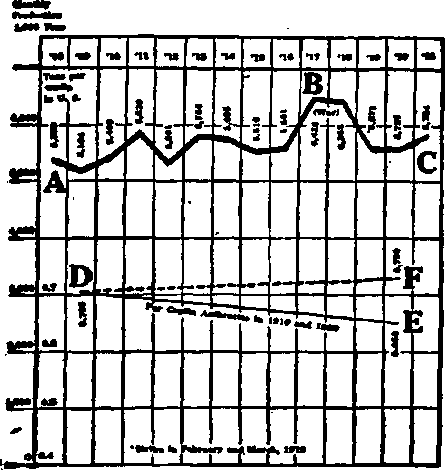
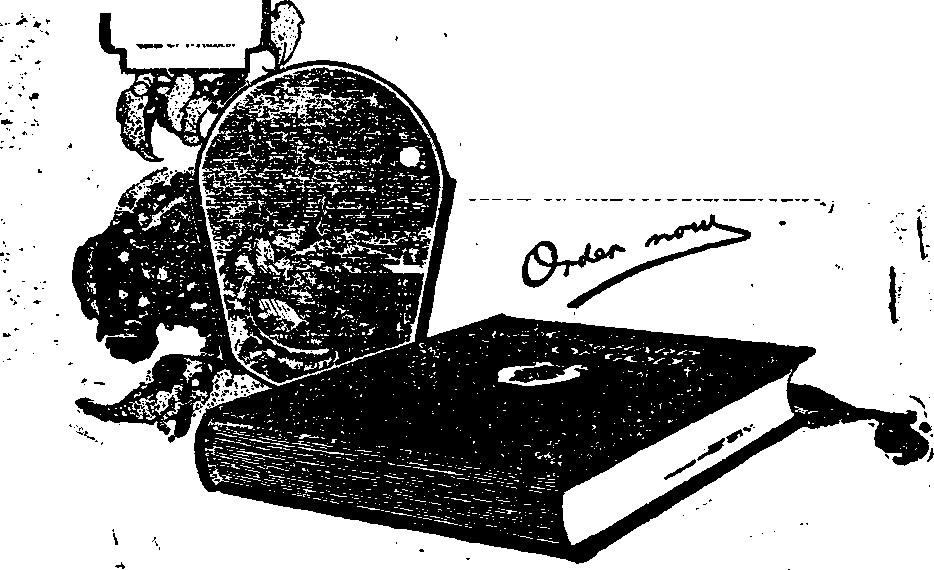

A-JOURNAL-OF- FACT ' ’ j?
Not. 28, 1921, Vol. m, No.57
fSB Pub Hiked every other iKfl week at 35 Myrtle Anmiiie, Brooklyn, X. Y., V. B. B.
Tea Cfnte a Copy—12.00 ■ Tear Cieerte and Forel<a Conatziaa. *2M
wna 9 woman, Mtrnn sb. mi jnnoo sr CONTENTS of the GOLDEN AGE
LABOR AND ECONOMICS Frtr the BaaattaB Mate..,.,--------------------------------------------- . ., IIS
SOCIAL AND EDUCATIONAL
Bin HMtas 99 aa9 <4—-IIS Ite Mamtas CMmB (ha)111 iMta'i Caaarttr Fbb...., IM Palmtai tto r—talw -Ill
MANUFACTURING AND MINING
■mbm«I "FmUmT’ rf Caak—_•> Wtel Imi la IMS-,.—.-
Ite inter cart (teat
to Bfc tall! II CteatM MflUoea IM
FINANCE-COMMERCE—TRANSPORTATION Wteta Mag ar Norn________111 Mtl Fntartfca rt Wrt Mb 111
Fm Mb «a Ktortrta Mten—llt Mb* PitaB rt WifliBB ■■ .
POLITICAL—DOMESTIC AND FOREIGN WDM tea L Bter tto Wart 111 Mr. Daar*a Ia*Mag MtaS
SCIENCE AND INVENTION
YtecM a» teirwBBr—................. .
HOME AND HEALTH
Matar m Hart Nrt Ma................—
TRAVEL AND MISCELLANT
"A UtO Nw Mar ata Ttaa” TO A Mkteuncr NMM'r IMaaau— -1« Sat Ste Mata. ------------—
RELIGION AND PHILOSOPHY
na CbBtb. Ite Star < CSrirt.
Aa rrraartaa la QaTa Ptaa—IM Cborte’a Fata* Mtfaa Baa rf
Gad's ihaainra State ata Fan* t»
Da Wtet It wm Ml Mb Sw IM Ml BNa State
vobmsb omcaa: Sita tai r M Craan Camca, Lancaater Gata. Londoa W.
S: OBMdtea: 37V Doadas St W3 Coronita. Ontario: Aaatralatan: M CtaMar SU Miftiiiirte AostraMa.
III Brooklya. N. T., w«tae»d*y, Navambcr 23, 1321 Number 57
Recurrent “Famines”—of Coal
T ITTLE children! Believe everything you •*-* see in the newspaper!
This represents the coal producers’ estimate of the discernment of the common people—and of the uncommon ones. For all the people believe nearly all they read in the public press.
Getting the people to believe what is told is one of the great secrets of success. It both pays and possesses greater potentialities of profit than any other profit-producing plan.
Cold leather is drawing near, and the people should begin to harken for the voice of the profiteer in fuel. For at this time in 1920 the coal barons worked one of the greatest hoaxes in American history. That they did it successfully ia evidenced by the reported half billion profit made out of it.
If the process is to be repeated as the 1921 winter deepens, it will at least be interesting to those in the secret to watch the thing being done. For this war-bom system of fooling the people through the press does the thing gracefully, without the populace knowing that they, too, have been “done”.
What Happened in 1920
IT IS bad enough that the people were told: "There is a conspiracy among coal men to keep prices up and and to restrict the supply”. Such a scarcity, however produced, would have been a genuine shortage of coal, which according to the supply-demand law would entitle the individuals having some of the dusky diamonds to reap the proper profits.
But when the actual deal engineered in 1920 is disclosed, the man on the street begins to wonder whether by any way of looking at it, or by any rule of the game, the coal profiteers were entitled’ to their $500,000,000 profit, or whether tfiey were just common thieves, or high-class shell-game artists. One can have some respect for a circus swindler; for there one expects to be fooled. But to have it happen in the business of keeping the kiddies from fr» iug, and at the hands of chamber-of-commerce dignitaries and frock-coated church officials — well, some things are speakable but some others are unspeakable!
We go into this subject because it ia about time for it to "happen” over again.
That which took place, and which might occur again any year, was related in a select few newspapers—an aristocracy of the press, which the vast majority of the American reading class are not privileged to read. The story was told in newspapers which do not reach the general public. The common, ordinary garden variety of newspapers, read by the common people as a whole, are owned by Big Business, and it will become clear why this numerically great section of the press did not let the truth appear. The facts came out last spring: but as the crisis wps over for the winter of 1920-1921, The Golden Age thought it best to tell the story later on, at about the time when the same thing was liable to be repeated.
The Regular Coal Cheat
THE diagram which is printed herewith shows the general and regular situation in anthracite coal from 1908 to 1921. The heavy line, AC, in the upper part illustrates the variations in the average monthly output of anthracite, ranging from a minimum of 5,164,000 tons a month in 11*09 to a maximum of 6,428,000 tons a month in the war year of 1917. The war gave an opportunity for unusual profit in anthracite; and the miners were permitted to work more than the usual average of a little over 200 days a year, because a bigger profit could be made on full-time coal production than could be made after the war by any of the regular schemas to keep the price up. The years of 1917 and 19,8
■were the only ones in which the anthracite miners had been able to make a good living for a long time, the idle days usually eating up any high pay that might be made from the working days.
There is something about this diagram which indicates clearly that there is an intentional regular restriction of the output of anthracite, with the purpose of keeping the price higher than it normally ought to i>e. This is shown in the two light lines, one solid, DE, and the other, DF, broken, below the heavy line AC.
mmiu rasmcnM o* juhumiis
The light solid line, DE, indicates the aver' age production of anthracite for each person in the United States in the two censns years of 1910 and 1920. In 1910 the per capita production of anthracite was 0.705 of a ton. In 1920 it was 0.650 of a ton. In the ten years there was a decrease in production per capita of 0.055 of a ton or, roughly, a hundred pounds less for each person in 1920 than in 1910.
That this reduction in production was neither accidental nor the result of conditions beyond the control of the anthracite coal operators, is manifest from the consideration that in 1917 and 19^8, when war prices made it pay handsomely to gfet the coal out, the average production of the four years previous of 5,504,000 tons a month was suddenly raised to a monthly average of 6,406,000 tons for the two yean of 1917 and 1918. This was an average monthly increase of 902,000 tons, or 16.4 percent. During this period of increased production the miners worked nearly all of the working days, earned good wages, and were able for the first time in many years, if ever before, to give their families the blessings and benefits of a good, decent American scale of living.
“What has been done can be done,” and the 1917-1918 production could be made the regular rate of production if the coal operators were willing. If the 1917-1918 average had been maintained in 1920 the average production of anthracite for each individual in the United States would have been 0.730 of a ton, instead of the 0.650 of a ton which it was. That about 0.7 of a ton may be considered a normal per capita production appears from the fact that it was the figure for 1910, when the process of gradually reducing the per capita production was not as fully under way as in 1920.
It is difficult for the operators to maintain the objection that they are unable to get the coal out at the former per capita rate; for they were able to do so for two years, in 1917 and 1918. Therefore the conclusion is manifest that the operators do not keep up the 1910 per capita production simply because they do not wish to do so. They have willed that the per capita production shall gradually decrease, because according to the well known supply-demand law of economics a very slight reduction in the supply, when the supply is just at the demand figure, makes possible not merely the maintenance of the price, but the raising of the price to an extent that the change in the ratio of demand to supply would scarcely warrant.
This scheme of figuring the probable demand and then limiting the supply to a figure a trifle below the demand is being practised in practically every one of the basic industries of America. This is one of the lessons which Big Business learned during the war, and from which it now profits hugely and the common people losa hugely.
One of the real problems before Big Business now is how, without attracting such undue attention from the people as to result in adverse political action, to so reduce supply as to be able to raise prices to a point where Big Business will be able to absorb all of the earnings of the rest of the people. This ambition has not been reached as yet, a fact which is evidenced by the other fact that the people still have some money on deposit in the banks and still hold quite a quantity of the Liberty and other war bonds. Some day, some bright and happy day, all the money on deposit in the banks will be deposited by- Big Business and all of the tax free bonds will be in the vaults of the super-men of whom the late President Baer of the Beading Bailway system asserted that it had pleased God to entrust to the men of wealth the management of the big affairs of the country. The enquirer queries whether the god mentioned is not the god of this world. The once-prominent kaiser used to have much to say about “Me und Gott” —the same Gott.—2 Corinthians 4:4.
Good Soil for the 1920 Scheme
THE latter part of 1919 had been marked by some anxiety about a possible coal shortage from a miners’ strike that might happen. This passed over, and the coal situation continued the even tenor of the regular method of keeping production close to demand; but the soil was becoming unusually good for what was to follow when, about April, 1920. the public mind became agitated over the possibility of a railroad strike which might interfere with the obtaining of coal cars at the mines and the shipment of loaded ears from the coal region.
The people had become quite accustomed to having some Government Bureau tell them what to do—during the war; and in April, 1920, whan the war-time regulation of the coal industry had ceased, the Interstate Commerce Commission took up the matter of averting a supposed disaster to come last winter from a possible shortage of coal. In June the Commission took drastic steps to end a coal shortage east of the Mississippi, by giving preference and priority to coal over all other materials on the railroads. This was designed to bring an end to a supposed shortage of cars for the coal industry. The country still being in a prosperous condition, the war funds not having all been expended, ahdJhe war earnings of the people not gone, there was an unprecedented demand for freight and coal cars. The industrial section of New England was given preference over all other parts of the country.
The matter was handled in such a manner as to excite whatever fears might have been latent in the mind's of the people; and fears began to grow and to spread that, with continued prosperity making unparalleled demands upon transportation facilities, there might not be any coal obtainable. The newspapers took up the cry, and there ensued an exemplification of crowd psychology not unlike the press-made war.
Instead of seeking to ascertain the facts and report them to the people, the press accentuated the popular fear, and by suggestion drove the people to a state of mind which had not been paralleled since the war-craze of 1917-1918.
The 1920 Coal Panic
THE newspapers got into action toward the latter part of June, 1920. This is an important date in the transaction, on account of what will be told later in this article. Such headlines as follow, appeared for articles and editorials and gradually drove the people frantic:
“Coal Scarcity.”
“U. S. to Rush Coal Here in Shortage.”
“Coal Shortage Menaces City Transit Lines.” “Chicago Running Short of Coal.”
“Ask Wilson’s Aid to Get Coal Here.”
“Coal ia Sought to Keep Cars Running ”
“Coal for New York Shut Off by Order.”
“Utility Companies Worried Over Coal.” “To Hold Conference on Coal Shortage.”
The hue and cry began on June 18, and the press hounds began to bay in real earnest on June 23. Before the tenth of June—a date that will be seen to have been the most important in the 1920 coal panic — there had been some mention of a possible coal shortage, but nothing like what burst upon the public within ten days after June 10, 1920.
In July the coal worry began to be forced home upon the public. It was the press that frightened the people with lines calculated to arouse the direst apprehensions:
“Public Utilities Here Urge Coal Claims on I.C.C.” “City Utilities Near Coal Danger Line.” "City Gets 300 Cars of Coal, Gain of 50.” “Ottawa Officials on Way to Confer with I.C.C. on Coal Famine."
t "President to Give Entire Power to Commerce ' Board or Revive Fuel Administration.”
“Mine Owners Declare Car Shortage ia Cutting Production by More Than Half.”
"Roads to Break Necks Moving Fuel If Operator! Will Break Necks Mining It"
"Coal Shortage Puts City in Darkness.” "Lowden Saya Coal Crisis Is Appalling.” These were samples out of thousands of headlines, all of a character to rouse the worst fears of a confiding public that believes the newspapers not wisely but too welt
The war dogs of Big Business, the public press, were hard at it again in October, after a little lull. Cold weather was just coming on; and a public mind, already rendered more than anxious, was half crazed by the newspaper articles with head lines such as:
"Cold Weather Bares Big Coal Shortage Here." “Kansans Suffer From Lack of Coal." “Bronx Shivering for Lack of CoaL”
“Flat Houses Short of Fuel and Dealers Unable to Supply Them.”
The month of November kept up the cry of the coal shortage, and the cold weather already felt made the populace fear lest they and their children should soon freeze to death in their homes. The press headlines shouted the refrain:
“The Coal Crisis in New York.”
“Coal Shortage Acute, Appeal to Copeland.” “Fuel for Apartment Houses Lacking, 55 Percent
Have No Fuel on Hand.”
“Belief Asked for City Coal Famine.”
“Staten Island Coal Situation is Acute.”
"Coal Up $1 Here, As City Shivers, Famine Up State.”
“Not a Pound of Coal in Albany Bina." “Doctors' Prescriptions for CoaL” “City Facing Winter Appeals for CoaL” “Copeland Finds Conditions Woeful.”
’ "City Coal Survey Shows All Parts in Critical Need.”
“Fuel Sufficient for Temporary Belief Arrives.” In December the press had almost nothing about a coal shortage. The coal men had loosened up, prices had dropped, and the country was saved.
How BigBasinm Cleared $500,000,009
THE inevitable result of such a press campaign was that the people all wanted coal at the same time, hoarded what coal they could get, bought more than they needed for current use, and cleaned up every pound of eoal that appeared for sale, and the unfortunates that were not among the early birds were crazed by the press-engendered fear that they would die,, they ancftheir wives and children, the next cold wave the Weather Bureau might curse them with.
It was the opportunity which comes only once in a life-time — unless it can be made to come more than .once. No one on earth knows a real opportunity better than Big Business, and the coal industry took advantage to the full of the 1920 mob-mindedness of the newspaper readers.
In 1919 there had been some gradual rises in
coal prices. By March, 1920, President J. IL Lewis, of the United. Mine Workers was officially inquiring, “Who gets the difference between the S3 to 98 cents a ton which is paid to * the miner’s and the $9 a ton for which the coal is sold to the consumer?” The war-time coal situation was being raked over, and such statements were flying about as: ,' i
“Already the miners' representatives have conclusively j demonstrated that one company, whose net profit was in | 1914 $511,000, made a net profit of $3,68G,000 in 1918, i while the nation which bought that coal was fightikg far 1 its life, and another company, whose net profits were $3,000,000 for the two-year period of 1914-1915, was. proven to have made a net profit of $21,000,000 for ths . two-year period of 1917-1918.”
In Ohio miners had placed in the cars of . coal envelopes in which were the question, “We miners got 60 cents a ton for this coal; how much did you pay for it?” and the answers came from Arkansas, “$11 a ton”, and from Texas, “$15.60 a ton”. The bituminous operators in May were denying to Senator Walsh that they had made any great profits. According to VicePresident J. D. A. Morrow of the National Coal . Association in 1917 out of 7,000 operators 6,600 made less than 15 percent, and through 1917 the average operators’ receipts per ton were only $2.26 and through 1918 only $2.61. ,
It was in June, 1920, that the Big Business L, machine went out for real blood. According tn ' : F. P. Hobgood in the New York Times,.“the ; pre-war price of Pocahontas eoal at the mine ; was $1.25, during the war $2.75, but here today $9.0(y’. “There is an abundant supply of coal, ,z‘ according to T. B. Koons, vice-president of the ■ Central Bailroad of New Jersey and other an- j
thorities, but the coal is, being held for higher ,
prices?’—this was in the New York American ' for June 27, 1920 — seventeen days after tha, i for the eoal consumer, fateful tenth of June, to be mentioned later. According to Alfred M. Barrett, acting Public Service Commissioner, “the worst fuel shortage in the history of tha country will confront New York next winter'*, which prediction was fulfilled, by the withhold- , ing of the coal. Mr. Barrett also charged that “coal prices were boosted beyond legitimate limits through ‘pyramiding*, which word he used to describe the piling on of profits and prices > in the process of handling the fuel”. On June 25, under the headline of “The Coal Panic”, the Naw York Times said editorially:
N«ruiu n. 1M1
“It seems like a paradox to say that there is plenty of coal at a time when there seems to be danger of suspending the operation of public utilities for lack of * coal so great that they are paying twice or thrice a normal price. Yet it is officially stated that up to June 3 the production of bituminous coal was 37,000,000 tons larger than last year, ranking third in the history •> of the industry. Nor is the export of coal responsible for the domestic shortage, for the exports through At-• lantic porta have been 4.551.000 tons, about half last year’s, and one-fifth of normal production. There is plenty of coal in the ground, and plenty of willing labor. Nevertheless, the best-informed consumers are the most alarmed. There ought to be some 35,000,000 tons in bins which are empty, and which it will be difficult to fill because of the necessity of moving the crops and the coal for next winter at the same time.” In a hearing on the anthracite industry in July it was stated by W. Jett Lauck, statistician for the mine workers, that "the real profits of the anthracite industry were at least seven times the apparent profits”. It had for many years been known by persons conversant with conditions in the anthracite region that between the railroad bookkeeping and the mine bookkeeping, both railroads and mines being owned by the same people, the mines were seemingly run barely above cost, while the roads charged so much that they wallowed in wealth. Mr. Lauck put it thus:
“The bookkeeping evidences of the unity between the ' railroad* and their coal companies are overwhelming. The railroads established such high rates for the trans. portation of anthracite that it became impossible for a coal company to operate at a profit The railroad coal companies were then supported by subsidies granted in one form or another by the parent railroad company. This was made possible by a bookkeeping 'system which rendered the finances of the two companies practically one. The railroads have carried bonds, made losses good, granted working capital and in other ways assisted the ooal companies financially, charging either a low rate of interest at none at all. . . . The real profits of the anthracite industry are piped off below the surface in terms which the public does not associate with the problem of anthracite. . . . While the margin shown by the production companies for the year 1918 would show a profit 6f. something over $30,000,000, the profits which ** ' the anthracite railroads made out of the transportation of the commodity, when added to the charges attributable to funded debts, etc., and to the profits of the railroad sales organizations, would probably be found # to total nearly ’seven times that amount.”
This is^snly a mere suggestion of the underhand, tricky, and deceitful methods employed by the men of wealth to keep the common peo-
A
pie in ignorance of what is going on, and especially of the profits they are making on what the people have to buy. Some years ago the railroads and the coal companies were outwardly and visibly owned by the same persons. After this was prohibited by law, the arrangement which followed amounted to substantially the same thing, in violation of the spirit of what— in the face of Wall Street's most powerful interests—the courts were obliged to decide was necessary to prevent the robbing of the people by the coal'barons. Like their burglar prototypes the "respectable" bandits of wealth utilise ways that are dark and devious to get the booty they are after.
The statement of Vice-President Koons of the Central Bailroad of New Jersey that there' was plenty of coal was confirmed in an editorial in the New York World for July 18,1920:
“The present disastrous situation ia charged to profiteering jobbers and speculators in coal Bailroad traaka and terminals at various strategic points are found te be clogged with loaded coal can which an purposely being held back by the speculative owners and shippers of the ooal to create artificial scarcitiea sufficient to lift prices 100 and 300 percent above what was paid st the mines. Possibility of such profit*, enables the specular tors to snap their fingers at the demurrage charges cf the roads, which start at only $3 a day per car thus loaded and out of use after an allowance of two days without charge.”
The writer of this article was one of tens of thousands who in 1920 passed mile after mile of loaded coal cars waiting on sidings along the main tracks of the railroads.
The crooked ways of coal were shown in an editorial in the New York Tribune on October 13,1920, just before the big squeeze of the consumers was made: ■
"Investigation by a Brooklyn grand jury shows that a single group of speculators has been holding 11,000 carloads of soft coal in railway sidings at Philadelphia, Baltimore, and Hampton Roads—and this in spite of unprecedented efforts by consumer* to get hold of enough fuel to keep their industries going. How many more such examples are taking place in various parts of the country remains to be seen.
“Government officials are said to have information that while only about one-fifth of the big coal operators have been acting dishonestly, yet the infiuence of that fifth has been so powerful a* to cause financial loss to operators who try to run their business decently. One operator, for example, is alleged to have lost $30,000 in a single month rather than connive at graft. Another, *who had no objection to paying for “privilege*”, mad*
a < b ixr “profit” of $2,000,000 in three months’. It appears that where crooked dealing exists, it commences with operators at the mouth of the mines, in conjunction with car distributers who furnish cars to the mines, and that it ‘runs through every later transaction until the coal is actually in the hands of the onnsumar^ ”
With twenty percent of the coal operators crooked and making huge sums, and the honest ones losing or making a bare living, it is obvious that the entire industry must in a brief time gravitate into the hands of the crooks that have the money. The industry tends to become worse and worse, and the hope of reforming it becomes exceedingly remote. The fact that officials of the law appeared to be able to discover only a handful of the coal criminals would indicate where some of the "profits” of the burglars went. The Lever Act was employed to bring these men to terms and protect the public from their depredations; but, as usual with laws designed for the benefit of the populace, it was found unconstitutional, and the act of the court gave to these “malefactors of great wealth” freedom to repeat the criminal coal panic of 1920.
Another of the slick schemes, by dozens of which the price and the profit were kept up, was related in the official hearings of July, 1920:
“The Lehigh Coal and. Navigation Company reported in 1912 that a depletion charge of five cents per ton would pay for all of its coal lands in twenty years. The Federal Trade Commission in 1919 reported that the average depletion charge for that year was 17.4 cents a ton, thus allowing a profit of twelve cents a ton, which is made the basis for fnrther issuance of stock. This hidden profit amounts to $10,000,000 a year.”
According to this statement, if five cents a ton would pay for all the coal properties in twenty years, 17.4 cents would pay for them in six years. As it is announced that the estimated life of the anthracite industry is well over a hundred years the present depletion charge pays for the properties every six years, or sixteen times over in a hundred years. This is in addition to the earnings which the bookkeeping calls^Cprofits”, and the other income which the accountants, who are hired to invent ways of deceiving the public, call by other names.
Incidentally, considering the acts of the men that have done as these men in the coal industry har^ wEpt chance for a fair deal have the workers-jn the coal mines? It is idle to think of fair, honorable, or even decent treatment for them, when the known acts of the coal profiteers are taken into consideration. This fact carries with it the presumption that when difficulties arise between the coal operators and the employes over wages or conditions of work, the * I men are much more likely to be in the right * than are the managers.
A great variety of remedies were put forward during and immediately after the coal panic of 1920. Senator William M. Calder of New York came to the aid of the people, caused r an investigation, and introduced bills for legislative control of the coal industry. The coal operators and agents raised the bogy of national control, nationalization of the mines, Socialism, and government ownership, and the movement finally subsided without anything being written into the laws to protect the populace from further raids. Other reformers sought to have government control of the coal business, government ownership, or regulation by commission after the manner of the Interstate Com- . merce Commission. But all such reforms were put to sleep by unknown interests—who, maybe surmised from the fact that the control of the coal industry is in the hands of the same wealthy group that control the other chief industries of the country. It is easy for politicians* to forget the common people, after a crisis has been passed. It is through politicians all over the world that the men of wealth maintain their control over the people.
Not a few suggestions appeared for the betterment of the distribution of the coal by means of new engineering devices, the manufacture of electricity at the mine, and many other schemes.
Haw the Panic Was Manufactured
NEVER has there been such a concrete demonstration of the necessity for the separation of . men of wealth from the control of the public press, as the 1920 coal panic. For the press played no small part, wittingly or unwittingly, in the preparation of the psychological soil anti the working up of the people so that they desperately hid against one another and forced the price of coal up to unheard-of-figures.
The story was told in a select few papers of limited circulation, and for obvious reasons never appeared in the general run of Wall-Srreet-owned newspapers. People that wish to get the news should patronize some such papei as Labor. of Washington, D. f’., which on February 19, 1921. played the searchlight on the coal panic in an article by Charles M. Kelley: ;
i
• '
“Big Business enjoys its little joke—if it is at the expense of the public.
“The group representing the coal industry got over a huge hoax upon the people last year, when it frightened the public into believing a terrible fuel famine impended, and started everybody filling empty bins at the highest prices ever paid for coal. Lurid alarms of millions freezing forced competition in bidding that brought profits of several hundred percent to the clever gentlemen who perpetrated the pleasantry.
“AH last summer and.fall newspapers devoted many columns of space telling about a coal famine, a scarcity of railroad cars and other adverse influences that combined to make approaching winter a dreadful prospect New England was reported as being down to a two-days’ supply, while the Middle West was bare to the boards. There would not be enough coal to go around, the papers said, and urged the public to face the situation courageously and place orders for fuel at any price.
“The public was completely taken in, and probably never would have known they had ‘fallen’ for a fake calamity howl, had not a confidential report of the proceedings of a meeting of the directors of the National Wholesale Coal Association come into the possession of Congressman George Huddleston, of Alabama md by him presented to Senator La Follette’s committee on manufactures, which is conducting hearings an the Calder coal control bill, and incidentally getting some facts concerning the methods of coal men that put them in. a class all by themselves among profiteers.
"At a gathering of the directors of the coal association held in Cincinnati, June 10,19£0, the sessions were given up almost entirely to a discussion of an ‘educational’ campaign that had been launched by the publicity committee. Chairman Peabody explained to his associates the desirability of stimulating demand for coal as the alternative of a substantial reduction of prices. Large industrial concerns, he said, were holding back orders, in the expectation of getting better terms. Unless some plan was devised that would put the public in a buying mood it would! be necessary to close mines or lower prices, a most embarrassing situation. If prices were cut, he explained, it would be difficult to justify an increase later when demand reached its peak.
“The chairman dilated at considerable length on the influence of the press and suggested that operators be assessed a small sum to promote an ‘educational campaign’, He knew fifteen or twenty editors who would be amert&ble to reason, and he presumed that other operators could apply pressure where it would do good.
“Chairman Peabody said that he had discussed the subject with 'my dear friend, Melville E. Stone, of the Associated. Press,’ and he had agreed to send out a number of articles &> the members of the association, telling about the-famine that faced the nation. In fact, Mr. Stone had already sounded out the public, and the result was gratifying and instantaneous.
“Mr. Brewster, a member of the committee, told what happened in St. Louis. There the editors had taken seriously the Associated Press reports and wrote editorials beseeching their readers to buy coal, declaring that prices would be much higher before they were lower.
“ ‘And,’ Mr. Brewster naively continued, Sre ware able to close five contracts that had been hanging firs, These men had been balding out for lower prices, and we had almost given up hope of closing their contracts. But the dispatches and editorials did the trick for ua’
“No more dickering about prices, no more holding back by buyers. Coal men were besieged with demands and were offered prices so high that soma of them wore ashamed—almost—to accept them.
“ ‘Those who had been demanding lower prices,* Mr. Brewster said, ‘thought they had better get under cover. Those five contracts will reimburse ua for our share of the cost of the campaign.’
"Mr. Peabody stated that the association had $200,000 in its treasury for ‘education’ purposes, but suggested that a referendum be had on an assessment of members for additional funda. The little work already done, he explained, justified further expenditures in this direction. A levy of one mill per ton would produce about a million dollars to ‘educate* the press.
“That inspired A. M. Ogilvia to suggest that a portion of this sum be devoted to paid advertising He imagined that the effect of this disbursement would ba to ‘change the attitude of some newspapers that have been annoying us. They will know/ he added, ‘that we are paying them, and will act accordingly.’
The Coal Propaganda
HE best joke of all was the way the publicity ex-
I«‘rts took in the Cleveland manager of the Associated Press.
“The head of the department, in his report, said this manags sent out a thousand-word statement prepared by the publicity department, ‘and assumed all responsibility for if. He had changed ‘scarcely a word’.
“By omitting all reference to the coal association, it was stated, the obliging Cleveland manager ‘gave the article a very good effect, as it was not recognized aa propaganda’.
“The committee patted itself on the back, and the publicity manager patted himself on the back, and everybody was in a jolly humor. ‘My good friend, Melville Stone,’ was given a word of appreciation for valued services rendered in ‘educating’ the public, and the press was referred to in glowing terms as ‘the great molder of public opinion’, and meriting ‘more attention from this association’.
“Their combined efforts had enabled the operators to defray the expenses of the campaign out of the increased profits of two days’ coal production.
“The association voted increase of salaries to all its officers—presidents, secretaries, publicity promoters, law-
yen and 'representative**—and then wmt into secret •onion to determine what price* should be charged the public tor 'rescuing it frem a famine’.*
Among other items in the foregoing report Ba Bent out by the Federated Press were the following, showing that the newspaper coal scare culminating in the fall of 1920 was operated partly at least through the Associated Press: “A letter written by John Pratt, publicity director * et the Naiteaal Coal Association in Washington, to a coal operator with reference to a meeting of the operaton io Cleveland, and dated October 30, 1980, and which was produced at the Senate committee hearing, dedared that following the meeting the Associated Prem had carried a news repert of o’® 1,000 words to its 8,600 or more newspaper plants, written by its Cleveland manager after consultation with Mr. Pratt
“ The great advantage ot this report from the operators’ viewpoint/ the letter went on to say, 'lay in the fact that the National Coal Association nowhere was quoted as authority for the Associated Press statements, the Associated Press making them on its own responsibility. In this way they ware of more convincing effect than had they been qualified with the inference of parti-unship?
“The minds of Americans must be ‘prepared', and from time to time appear ‘news' stories purporting to show haw serious the coal shortage is."
In the press-made coal panic the railroads were blamed for not having the can to carry the coal The truth was that the ears were lying on sidings loaded with coal, and earning demurrage charges which the operators and middlemen and retailers in the $500,000,000 conspiracy were glad to pay out of the multiplied profits from the "scarcity".
Furthermore, the anthracite-carrying railroads are to all intents and purposes owned or controlled by the same men that own the mines. If a mine owner actually wanted cars for his mines, what is to hinder himself as railroad owner from getting the cars to the mines tn double-quick order!
Are There to be More Coal Panics?
TTHE excuse of The Golden Age for publish--L in^utems a year old is that they are news to most readers, who have read nothing but the newspapers which are partners in the thievery of the coal men. Another excuse is that it is not impossible that the coal men and the newspaper men may be'planning to “pull off” another coal panic—and then again from year to year—until the public learns that nothing which appears in one of the Big Business newspapers is to be believed at face value, if at all, until verified from other sources.
As late as April, 1921, it was stated that "this press campaign is still proceeding vigorously with a view to the future”.
In the New York World for May 8,1921, for example, a despatch published what looked like more of the coal barons’ propaganda to get the public ready to be frightened again in the cold season of 1921-1922. Mr. Elkins, be it not forgotten, is from West Virginia, and has been known as one of the prominent coal magnates of that bituminous district The despatch ran: “Washington, May 7.—Senator Elkina at Wert Virginia issued a formal statement today urging the public to lay in its winter supply of coal aa usual at this tuna of year, instead of waiting until the cold months again are at hand. He said that upward of 200,000 miners were out of employment because of the lack of demand for coal, and that their dependents were in distress.
“Senator Elkins also declared that a sudden restoration of a market and an attempt to crowd the hauling of the bulk of th* nation's coal into ths fall and winter months would place upon the railroads a burden which they wen admittedly unable to discharge.
" That will simply mean,’ he added, 'a repetition of the so-called “coal famine" of last year, which was, per as, a oar famine.’ *
Yes—miles and miles of loaded cars waiting on sidings for a big rise in profits would produce another car famine.
The 1920 coal famine owed its inception to a famine of orders for coal and the prospect of an immediate drop in prices, which the newspapers bravely prevented. .
Recent Propaganda
ANOTHER bit of preparation of the public . mind appeared in an article in the April 6, 1921, issue of Commerce and Finance of New York, by Alan H. Temple, entitled "Galloping Toward a Coal Famine’', which says in part, with the old familiar “famine" ring:
“Dr. George Otis Smith, head of the Geological Survey, says that a revival in trade will bring a greater demand for fuel than the railroads can cany, a famine in coal, and congestion in many lines. Operators second his warning. , . . Phil H. Penna, secretary-treasurer of the Indiana Coal Operators' Association, said recently: TPhen the revival of business came [1919-1920] everybody wanted eoal at once, and the railroads did not have equipment enough to haul it. That wu the cause of the condition of 1920, and just a* sure aa the sun rises and seta we are going to have the same condition on the day the revival of business sets in in this country, and consumers begin to look about for a supply of coal.... Those who are familiar with the coal trade can plainly see the time approaching when we will have market conditions similar to those of 1920. No responsible operator wants to see a recurrence of such a situation. . . . Although the mines can produce plenty of coal, the railroads will not have the equipment to transport it, and the same frantic bidding we witnessed in 1920, with resultant high prices, will obtain.’ . . . Perhaps consumers who read the warnings put out will say they are only more propaganda for higher prices. Coal buyers remember the excessive charges they had to pay !a.~t fall and the unconscionable profiteering of which many operators were guilty. They distrust operators.”
It is to he hoped that readers of The Golden Age may become thoroughly awakened to the methods of the eoal industry combined with the newspapers—and likewise of other industries. Some of the people have their- eye-teeth cut. A writer in Labor for September 10,1921, says:
“The publicity men of the Illinois Coal Operators’ Association urge liberal buying of fuel at this time with a prediction that next spring the coal industry will be tied up with a great strike. As damnable publicity, this is worthy the attention of the government. With winter coming rapidly, with coal production far below normal, and with the railroads admittedly in no condition to meet the demands that will be made upon them, cold-blooded mercenaries set out to alarm the public.”
That there was no scarcity of coal in 1920 is manifest from the average monthly production of anthracite in the foregoing diagram, and from official statements that exports were less than usual in 1920, and that the production of bituminous was more than usual.
Anthracite is still high, though not too high for the operators, nor for another coal panic, if the operators should decide to apply to the public the deft touch of propaganda through the newspapers. Let the press sower belch forth the fumes of fear of freezing, and the populace will again respond with competitive bidding and will force the price of their own fuel to the 1920 top.
Coal in New York is $6.64 a ton higher than in 1^13, an increase of a hundred percent. Of this advance $1.47 is increased transportation and $2.70 increased mine wages, a total of $4-17, or 63 percent of the total increase. At wholesale coal is 134 percent higher than in 1913, which contrasts with the 25 to 50 percent increase of other coipmodities.
Commenting on this disproportion, the New York Trust Company says:
“The lack in the anthracite indnitry of compelling business reasons for deflation may make it necessary for the big men of the industry to takq strenuous methods to relieve the situation for the consumer. A situation of this kind often leads to agitation for Government control or ownership, or price fixing, or interference of other sorts, the disastrous consequence* of which have been only too apparent whenever an industry has boon subjected to them.”
Does the hint of “strenuous methods-’ bear the odor of lower wages, of West Virginia eoal region brutalities and denials of constitutional rights;’ Are the anthracite miners, too, to be made the object of such attacks as have been made on other workers! For the railroads “cannot afford” to lower transportation costs, and relief for the consumer has to come out of wages.
Thievery Based on Fraud
HE reported half-billion of profits taken in from the eoal panic was obviously thievery based upon lying; and the guilty par-ties were the coal operators, middlemen and retailers and the Big Business newspapers, together with some government officials who aided in the famine predictions. The moral title to these profits is as valid as the title to any other stolen property. The moral title is particularly indefensible when there is taken into consideration in connection with the theft, the fraud perpetrated on the people by lying reports in the public press.
The Golden Age goes on record, however, that these thieves are not to be held as fully responsible for their misdeeds as they, would be, were they not as much victims of a system created by the great adversary of humanity as are the buyers of their coal. Being straight or crooked depends much oh environment. A burglar brought up among burglars is not so much at fault morally as he might be were his environment better. A coal operator or dealer usually lives in an atmosphere of wealth, of disregard of the popnlaee, and of tolerance of sharp practice. Most of the coal men are more or less prominent church members. The fact that their Christianity is an hypocrisy must morally be set over against the fact that their world is a world of hypocrisy, pretension, and deceit. What they, like other men, need is a better system, a better world, and this the coming Golds* Age will soon supply.
But such men know that they ought not to do wrong, and they ought to know that there is a limit to evil-doing. There nndonbtedly arrives the hour when individuals and classes must come into judgment, whether their deeds have been good or evil, and when they must render an accounting to the great Judge. Such a time of rt>r>ironing js here; and we would commend to these men the words of the apostle Paul, and beseech them to mend the ways of the coal industry, to try to do right, to observe the Golden Rule in dealing with the people. These men are unfeeling in dealing with employes and judge them disdainfully, and often unmercifully. Of the coal “malefactors of wealth” the apostle Paul says:
“The fact is [the translation is Weymouth’s] that in the stubbornness of your impenitent heart you are treasuring up against yourself anger on the day of anger—the day when the righteousness of God’s judgments will stand revealed. To each man He will make an award corresponding to his actions; . . . upon the self-willed who disobey the truth and obey unrighteousness will fall anger and fury, affliction and awful distress, coming upon every man and woman who deliberately does wrong.”—Romans 2:5-8.
“But of this be assured: in the last days grievous times will set in. For men will be lovers of self, lovers of money, boastful, haughty, profane. They will be disobedient to parents, thankless, irreligious, destitute of natural affection, unforgiving, slanderers. They will have no self-control, but will be brutal, opposed to goodness, treacherous, headstrong, self-important. They will love pleasure instead of loving God.” —2 Timothy 3:1-4.
And'the Lord through the prophet David also warns:
“Be [truly] wise now, 0 ye [financial] kings; be instructed [in right doing] ye judges [financial rulers] of the earth. Serve the Lord with fear, and rejoice with trembling. Kiss [make up with] the Son [Jesus Christ and His teachings], lest he be angry, and ye perish [through the wrath of the disdained common people] from the way, when his wrath is kindled but a little.”—Psalm 2:10-12.
How much more satisfying it would be to do business on a plan that would meet the approval not only of fellow men but of Godl Would that the men of wealth might heed!
By Lawrence Lusni Lewis
IF YOU ever intend to ride through California, whether on train, auto, or Missouri mule, let it not be in August. Take due warning and be assured that if you do come through in that month all your dreams, if you have any, of California’s being a garden of Eden will be dissipated into a cloud of dust on a gusty day.
From January to June Eden is indeed here; and from Sierras to the Coast Ranges the great valleys lie laughing in the sunlight, kissed by poppy-scented breezes and clad in robes of living green.
But August! No wonder my little Dorothy asked, as we were flying southward through FresirtKon the Sante Fe, if August was derived from the two words Aw and Dust. I agreed that it probably was, and also Gust.
As we sat by the open window that scorching midsummer day, breathing the dusty gusts and trying haVd to admire the scenery of the beautiful San Joaquin Valley, which was indeed marvelous, I apologized to Handet and murmured to myself:
"To shut, or not to shut—that is the question. To shut, to roast, perchance to suffocate—Ahl There’s the rub.” Not to shut—the swirling dustladen zephyrs bring some relief from the heat, but also coat us, both inside and out, with thick layers of fine, fertile alluvium.
My blue serge suit begins to resemble a piece of war-torn khaki from a front-line trench, my nostrils and throat itch and burn, my tongue is dry and parched despite frequent ablutions with twenty-cent bottles of soda-water. I taste all the varieties of soil over which our rushing train is taking us. Truly I had counted on seeing, smelling and touching this fine country, but to taste it! This is indeed an unexpected pleas—
“Tickets, please!” The conductor stands before me. I explain, as politely as I can under the circumstances, that I gave him the tickets not five minutes ago. He very rudely inform* me that I did not. By that time the dust had penetrated to my very soul. I splutter and drip with anger and perspiration; the last vestige of my collar melts away; and the only reason that I do not rise up in dusty wrath and grind the poor specimen of fallen humanity into atomic powder is my remarkable development in the Christian graces of kindness, humility, meekness, love, forbearance and longsuffering—and the fact that he is a larger man than myself.
That spoils the rest of the day for me. I essay in vain to focus my attention upon my dusty papers and still more dusty books. I try to divert my mind by gazing on swiftly passing Edenettes of vineyards and orchards, inviting homes in green groves and gardens, vistas of palms and eucalypti, pastures of alfalfa and Bermuda grass, splashed here and there with the delicious gold of wild sunflowers. But alas! They are all besmirched, tarnished with the leaden hue of dust, with a dusty sun glaring in torrid heat al>ove the vineyards between whose endless rows lie rows on rows, miles on miles of trays of drying raisins—dusty raisins!
Or is my dn.<tv viewpoint due to the cloud of desiccated mother earth with which my hurtling train envelopes met Let us hope so. At least, it is a comfort to know that raisins are thoroughly washed at the packing houses before being sent to the consumers.
At last evening comes. We have left Bakersfield behind and are eating supper. It was a dandy good supper, when the headess of the family (I being the head of the family, she logically would bear the feminine equivalent as her title — thus we avoid disputes on this much mooted point) had packed the same — with neat roast-lamb and fig-jam sandwiches along with lovely grapes and fresh Calimyrna figs of unequaled flavor and sweetness. The heat of the day has somewhat abated, but not so the dust. .We have forgotten our salt and pepper, but we do not miss them—all the seasoning we want— and more—comes through the window. We are approaching the Tehachapi ranges, and the Edens of the valley have been eclipsed by the wild deserts of the foothills. We know this without looking out; for we can taste the alkali, the sage brush and the chaparral in our sandwiches!
But now another agency of torment mocks us. A train fly has taken possession of our seat. Have you ever met a train fly—a trained train flyd Now) I am striving to bring up the children in the way that they should go, and to this end am trying to set them a model of Christian virtue ; but the patient training of a life-time was completely and forever demolished in one hour by that rascally fly. At present, when I am giving the tots certain needed paternal admonitions, I can see a rominis^nt twinkle coming into the corners of their- eyes and—the mischievous little imps — I know what they are thinking of — that fly!
He, she or it, whichever it, she or he was, discovered us as we had commenced on the figjam sandwiches. She, he or it promptly commenced also. We promptly objected. Many a painful slap against seats and windows did my poor hand suffer, but Mr. (we will decide to call him Mr.—he was too rude to be a she, or even an it) Fly did not even bat an eye. On the contrary, he seemed to be all eyes—and wings. In spite of my strenuous and murderous efforts, he leisurely described a few zig-zags in the air, like a sailor on shore before the 18th Amand-ment went into effect, and settled back comfortably on the sandwich.
I begged, I implored, I entreated — to no avail. I made sundry uncomplimentary remarks —for the which I am now heartily ashamed— with reference to the entire family tree— or, rather, to be more exact, the family manurepile—of the entire tribe of flies from Adam fly to this most exasperating fragment of winged offal that ever—but there he was again!
And now, to add direst insult to injury, he quenched his thirst by quick jabs at the corner* of my mouth, and the sting of his filthy proboscis as he drew out his mouthfuls of moisture maddened me beyond expression. Oh! For a hand six feet across! Oh!—Ah! At last!
I leap to the window, shut it with a bang, sit baek with a Napoleonic grin and fold my arms in victory. At last! I have out-maneuvered our foe; our troubles are over. With unbelievable stupidity he had for a moment settled upon the window-sill—the outside sill—so that we now had the ecstatic joy of sitting back in blissful and happy comfort and regarding him through a solid thickness of window glass as he sat there meditatively scrubbing his sloppy nose with those germ-laden — and fig-jam laden — paws of hi*.
I could feel his cold, calculating glance upon me through those myriads of greedy eyes—but I cared not. For one solid minute I felt akin to the great conquerors of the past—to Alexander the Great, to Genghis Khan, to Julius
Ctesar; and none of these, I am sure, felt more keenly than I the supreme exhilaration of a hard-fought battle victoriously won.
But alas! And alack! How short, how transient, how evanescent is human bliss! How hollow all earthly joys and comforts!
I had just begun to enjoy the scenery. The ranges of the Tehachapi, blue in the approaching twilight, were drawing ever closer; the tang of the cool night air came soothingly through the car; sunset—glorious, incomparable California sunset — was adorning the heavens. For some moments my eye dwelt in rapture upon the ravishing hues of crimson that wreathed the Western horizon. I smiled in pure happiness. I forgave the dust, and even the conductor, and looked at the window sill for one more happifying glance at our erstwhile tormentor— but he was gone! Momentarily my joy was increased tenfold. I pictured the insect wallowing in our smoke some miles to our rear, struggling, but in vain, to regain his fig-jam supper—and then, sailing over the plush seat behind us, came—my fly! •
I could swear that he was grinning from ear to ear—if flies have ears. I cursed my obtuseness. Of course, he had simply gyrated back and through the next open window behind us.
But woe upon woe! Truly, troubles never come singly! New light was shed upon the phrase “single blessedness". Up to now I had a single fly. Nowmy fly had brought along another, his twin brother, doubtless, who had been stationed by Chief Knight Fly to plague the next seat below us, but now sent as a reenforcement to make and wage relentless war, secretly and openly, against protesting, helpless us.
The unequal combat was soon over. I pawed and smacked and waved and struck until my arms dropped in sheer weariness. A merciful faintness stole over me, my reason tottered, all my senses became numbed. I had just time to fold my coat at the head of the seat and, as we shot through the first of the eighteen tunnels of the superbly picturesque Tehachapi pass, I dropped over dead—asleep!
Whether it was the fly, the dust, the copy of The Golden Age that had been handed me in San Francisco, or all three, but as I slept I dreamed; and I dreamed that I was the personification of the human race—the entire twenty billions of them rolled into one— and that I was being buried under a pile of foul dust by two monstrous flies, each as large as a barn, and labeled respectively, Sin and Death.
■ I struggled and kicked hopelessly for what seemed like six thousand years, and at last was about to be completely submerged despite my most desperate efforts. But at the very moment when I realized that all was over and called upon the Lord for help, a glorious light burst suddenly about me, a radiant being like unto the Son of Man took me by the hand and lifted me from the dust, brushed me clean with Hie own beautiful hands, and then bade me look about. I did so, and what a sublime transformation!
Instead of dust was a garden, an indescribably lovely garden, with exquisite, beauteous birds and animals, flowers and fruit trees, springing fountains, with green, entrancing vistas opening endlessly on every hand. I looked about for Sin and Death, but they were nowhere to be seen. Instead, I heard a voice, so vibrant with melody and infinite love that every fibre of my being thrilled with joy and adoration. I listened to every precious word as the divine Speaker invited me:
“Come, ye blessed of my Father, inherit the kingdom prepared for you from the foundation of the world”. “There shall be no more death, neither sorrow, nor crying, neither shall there be any more pain; for the former things are passed away. Behold, I make all things new.’*
The item on page 780, Number 53, of The Golden Age regarding an occurrence at Glasgow should have been indicated as occurring at Pla is tow, suburb of London.
In ThSTGolden Age Number 54, page 25, “aboriginal man” should read “aboriginal Man” (Man in this instance being the distinctive appellation of an ethnic group). On the same page Sha should read Shi. Onthe same page Kyuslm should read Kyushu. At the bottom of page 26 Kheftin should be Kheftiu. On page 27, near the bottom Gisle-ban should be Gish-ban and Akkad should be Erech, a Sumerian citystate.
DURING -the current generation marvelous discoveries have been made which bid fair to revolutionize our whole theory of science and to require the complete revision of our opinions concerning astronomy, chemistry, geology, and physics. When I went to school the La Place hypothesis was taught as an established fact; hut today the foremost authorities reject it as not only unproven but improbable. Contrary to the long-accepted theory of La Place, astronomers now assert that there is no real evidence that nebulous matter is ever formed into stars. One astronomer believes that the latter are the result of “radiation pressure”. Stars are globular bodies of gas, wherein the complex structures of the atoms are broken down, and the entire mass is homogeneous in construction. Their high temperatures produce not light, but radiant energy, which he declares to be “the prime factor which fashioned chaos into stars”.
Other astronomers question the supposition that either the earth or the sun was ever different in structure from what they are today. They deny that the interior of our planet is fluid, or was ever so; but on the contrary that through gravitation pressure the core of the earth has a density greatly exceeding anything near the surface. The core of almost pure iron is intensely heated by self-compression, but is rigid and without cracks, the lighter material being forced to the surface, where it forms an outer layer some six miles thick. If the earth’s core were “molten matter” they declare that the crust would have tides like the sea.
We used to be filled with awe at the expectation of the earth’s growing steadily colder throughout the ages, until after “millions of years” it would become utterly frigid and barren of life. Now they assert that there is radium enough in the earth to supply heat and power forever.
It seems to be the general opinion among Bible Students that our planet is the first one to be inhabited in the universe; and indeed Scriptural testimony appears to confirm this view. Against this view, however, astronomers claim that our sun is not one of the oldest stellar bodies nut ’rather, so to speak, middle-aged. Stars affe classified according to magnitude, or degree of brilliancy, and also according to color. The oldest stars, such as Antares, Betelguese
By 0. L. Bosenkrans, Jr.
and Aldebaran, are red. Some slightly less ancient, like Arcturus, are coppery hued. Etamin in Draco is orange. Solar stars, such as Capella, Pollus and Fomalhaut, are yellow, like our sun. Sirian stars are white, and are considered to be of the most recent origin. Procyon is called a sirian-solar because it is yellowish white. Vega, which is bluish white, is supposed to be one of the youngest of stars. Curiously enough, Sirius, which is now white, was referred to by ancient astronomers as red; and we have examples of stars which are variables as to color. Such a one is Dubhe, one of the “pointers” in the Great Dipper, which changes from yellow to ruddy every 54| days.
The stellar map of today is not the same as that on which our ancestors looked. Owing to the precession of the equinoxes, the constellations which centuries ago were high up are now so low in the same latitudes that only a part of them show above the southern horizon. Some of the stars also have diminished in brightness, so as to alter somewhat the appearance of certain constellations; and one whole constellation, the Pleiades, which the ancients allude to as the brightest and most glorious of all, has receded so far from the earth that it much resembles a luminous cloud.
Among the stars which have lost their brilliancy are: Thuban, or Alpha Draconis, which, as its name implies, was formerly the most prominent object in the Dragon, as well as the pole star about 4,000 years ago. Now it is a faint star nearly midway between Gamma Ursse Minoris and Mizar in Ursa Majoris, while Etamin or Gamma Draconis exceeds it in brilliancy. Capella is another star which shines less conspicuously. ' Once classed as the brightest in the Northern Hemisphere, it has now shrunk to second place; while Vega, in Lyra, has the preeminence. In 1847 Herschel pronounced Benetnasch, at the extremity of the handle of the Dipper, to be the brightest star in Ursa Major. Today Aloith “the tail sheep”, is brighter. Shedir, or Alpha Cassiopeia, once justified its astronomical designation; but now Gamma is more brilliant Likewise with the "Heavenly Twins", in 300 years Castor has moved from first to second place, and Pollux has reversed the process. The explanation is that the first named has been receding from us at the rate of
twenty-five miles a second, and the latter has approached at the same rate of speed. In 140,-000 years, it is estimated, Pollux will appear to earthly inhabitants as a mighty sun, but Castor will be invisible to the unaided human vision.
Castor is a remarkable binary, or double star, having a greenish yellow companion which would be visible to the naked eye except for its close proximity to Castor, whose superior brilliancy hides it. Castor itself is white in color, tinged with green. The two revolve around each other in a period of 1,000 years duration. The period has not been completed since the orbit was first discovered, two hundred years ago. Castor’s companion has a dark satellite which revolves around it in less than three days, and another small star near it is believed to be part of this system.
If the Pleiades is the central part of the Almighty's power or, as it were, His throne, that constellation is worthy of our most profound and reverential interest. It contains only six lucid stars, although tradition reports another, called the Lost Pleiad, which is supposed by some to be identifiable with Pleione. Of these the brightest, Alcyone, is now only a third magnitude star, and the remaining five are of the fourth magnitude. All of these stars are four “light years” apart, or farther from each other than the nearest fixed star, Alpha Centauri, is from us. Alcyone is three hundred light years from our planet, which means that it takes the light of this star, traveling at the rate of 186,-360 miles a second, three hundred years to reach us. It is such a huge body that it emits sixty times more light that does Sirius, the Dog Star, which in turn gives out forty times more light than does our sun.
Although the Pleiades contain only six stars visible to the naked eye, photography reveals about three thousand in the group, many of which are telescopic. The whole group presents a strange and beautiful aspect, being wrapped in a yeil of nebulous matter, a “cosmical fog”, which takes the form of loops and spirals, festooning star to star. All these stars have the same general motion; all are sirian, and therefore approximately of the same age—if color is really a criterion for deciding the point of age. The group is traveling away from us at the rate of thirteen miles per second, which accounts for the diminution of brilliancy within historic times.
The Pleiades have always been an object inspiring awe and worship or, at least, special interest, and have been variously described, fancifully as a “hen and chickens”, a swarm of “fireflies”, or “bees”, a “rosette of diamonds’*, and the like. The Greeks considered that winter commenced when the Pleiades appeared low on the horizon just after sunset. The Tahitians divided the year according to the appearance of the Pleiades early or late in the evening, into “Pleiades above" and “Pleiades below”. When the constellation rose at sunset on November 1, the Druids celebrated the destruction and rejuvenation of the world. The sacred fires were extinguished in the temple, and the spirits of the dead were supposed to embark in boats for the seat of judgment, where the god of death apportioned each soul to its future residence. A reminiscence of this is “All Souls Day”, on November 2, a Boman Catholic and Episcopalian “holy day”, when supplications are made for the souls of the pious dead.
Indeed it is remarkable what degree of importance was attached to this constellation by many diverse nations. The ancient Peruvians, at the rising of the Pleiades, made rounds of calls on their friends and relatives, bringing food and drink, and indulged in lamentations. In India, November was called the "Month of -Pleiades” and the Festival of the Dead then took plade. The Australian black fellows formerly held corroborees, or tribal dances, in this -month in honor of this constellation. The Aztecs believed that the world was once destroyed by a flood at the rising of the Pleiades; and when that constellation reached the zenith they performed propitiatory human sacrifices, with the object of averting a repetition of the catastrophe. But on. November 1 and 2, when the zenith was passed, they celebrated the escape with feasting and rejoicing.
To digress a little: This Azteo tradition was borrowed from the earlier one of the Toltecs and Chichimecs. According to that tradition the antediluvian world was the age of Atonatuik, or the “Sun of Waters”. This age terminated in a universal deluge from which the sole survivors were Cox-cox, or1 Teo Cipactli, and his wife Xochiquetzal, who escaped on a raft of cypress wood. Another account has it that their ark was a hollow log of the weeping-willow tree.
One well-known astronomer of the last century, of an agnostical turn of thought, affected to explain away the Deluge by the astronomical traditions of remote antiquity. He fancied that in the old astrological temples of Chaldea the constellations were depicted as they appeared at that date, somewhat different than at present Centaur was a man, instead of a man-horse, represented as offering a gift on Altair. Near him -was Argo, the Ark, which no longer looks like a ship, but which then stood with level keel and upright mast. In the Ark’s rigging was the figure of a dove, and on the back of Hydra, the sea monster, which then lay horizontally to the ship, was Corvus, the raven. In the smoke of the Altair (part of the Galaxy) was the bow of Sagittarius, representing the bow in the clouds. The southern limitsof the old star domes, or charts, were then all watery constellations: the Southern Fish, Cetus, the whale; Aquarius, the River Eridanus, and Hydra. Out of this accidental grouping of astronomical figures, our astronomer pretended, arose the legend of Noah and the flood. Is it not just as reasonable to suppose the reverse case, that out of traditions of that appalling catastrophe early astronomers chose their figures for the constellations?
The same writer avers that mythology was the outgrowth of the constellation figures in the astrological temples,and was suggested by them. We believe that there was a more solid basis for the legends of mythological heroes and demi-gods in the Nephilim, the hybrid offspring of the fallen angels referred to in the Bible.
To conclude with one more vagary of this ingenious but misguided savant, he remarks that about the date of the birth of Christ there was a conjunction of the three planets Jupiter, Saturn, and Mars. Perhaps there was a comet or a meteor besides. All this would be considered by an astrologically prepossessed age to pertain to the horoscope of the infant Jesus, and to the wise men of the east—whom the writer identifies as Chaldean astrologers—would indicate the greatness of the child to be born. As a matter of detail, he frankly admits, none of these explanations correspond with the account in the Epistles. Neither conjunctive planets, meteor, comet, or nova would go before the travelers to direct their journey from east to west to show them the way to any place. Yet the ancients sometimes regarded comets as meteors.
Atheists sometimes aver that the study of astronomy serves to refute the Bible; but on the contrary I believe its effect is rather to awaken in the mind a profound sense of awe and reverence for the Creator of all things. Instinctively the spirit cries out: "Great and glorious are thy works, Lord God Almighty: True and just are thy ways, thou King of nations!”
IF ANY reader of The Golden Age wishes to inquire why the United States entered the World War let him write to Hon. M. A. Michaelson, of Illinois, member of Congress in the House of Representatives, Washington, D. C., and request of him a copy of his “Resolution Asking for Investigation of Foreign Propaganda in America", presented to the house on May 26, 1921.
The resolution, accompanied by the usual legal 'phraseology and proposals for investigation, sets forth the following allegations. It is doubtful whether Congress will have the courage or the character to make a public investigation of t^hes$ charges, and it is certain in advance that, the press association and the newspapers o? the country would never give them honest publicity if they did so. The United States is now in a position where any gang of plug-hat thugs, if they have means to finance the propaganda in hand, can murder men by the hundreds of thousands and rob the people to the tune of billions of dollars, and reduce them to slavery—all in the most “respectable** manner possible, by corrupting the truth and causing the people to read and believe and then give governmental, support to lies, and hence to liars and murderers.
On February 9, 1917, a formal statement was inserted in the Congressional Record in the House of Representatives of the Congress of the United States bearing upon the entrance of the United States, as a nation, into the conflict of the great World War then in progress, such statement appearing upon pages 2947 and 2948 of the Congressional Record of the date mentioned in exact words as follows:
“Mr. Calloway : Mr. Chairman, under unanimous consent I insert in the Record at this point a statement showing the newspaper combination, which explains
their activity in this war matter, just discussed by ths gentleman from Pennsylvania [Mr. Moore]:
‘"In March, 1915, the J. P. Morgan interests, the steel, shipbuilding, and powder interests, and their subsidiary organizations, got together 12 men high up in the newspaper world and employed them to select the most influential newspapers in the United States and sufficient number of them to control generally the policy of the daily press of the United States.
“ “These 12 men worked the problem out by selecting 179 newspapers, and then began, by an elimination process, to retain only those necessary for the purpose of controlling the general policy of the daily press throughout the country. They found it was only necessary to purchase the control of 25 of the greatest papers. The 25 papers were agreed upon; emissaries were sent to purchase the policy, national and international, of these papers;'an agreement was reached; the policy of the papers was bought, to be paid for by the month; an editor was furnished for each paper properly to supervise and edit information regarding the questions of preparedness, militarism, financial policies, and other things of national and international nature considered vital to the interests of the purchasers.
“‘This contract is in existence at the present time, and it accounts for the news columns of the daily press of the country being filled with all sorts of preparedness arguments and misrepresentations as to the present condition of the United States Army and Navy, and the possibility and probability of .the United States being attacked by foreign foes.
“ “This- policy also included the suppression of everything in opposition to the wishes of the interests served. The effectiveness of this scheme has been conclusively demonstrated by the character of stuff carried in the daily press throughout the country since March, 1915. They have resorted to anything necessary to commercialise public sentiment and sandbag the National Congress into making extravagant and wasteful appropriations for the Army and Navy under the false pretense that it was necessary. Their stock argument is that it is “patriotism”. They are playing on every prejudice and passion of the American people.’”
In addition to the information and charges filed by ■ Congressman Callaway in the foregoing statement, M. Gabriel Hanoteaux, formerly minister of foreign affairs of the Republic of France, in his history of the t late war, states in effect that France was ready to make peace in the latter part of the year 1914, but was dissuaded from doing so by three Americans — namely, Fobert Bacon, of the financial house of J. P. Morgan -A Co., fiscal agents for the British Government; Myron I T. Herrick; and William G. Sharp—and that these men !■
represented to French officials that if France would t
continue the war these three men would organize a propaganda to put the United States into the war on the side of the Allies, and M. Hanoteaux further stated that the sum of money which was provided to goad the United States into the war was too large even for -American comprehension.
The charges filed by Congressman Callaway and the statements made by M. Hanoteaux allege that there was a definite and widespread conspiracy operating in the United States to plunge the Government of the United States into war.
In addition to the information and charges filed by Congressman Callaway and the statements made by M. Hanoteaux, the report of Sir Gilbert Parker, who was in charge of the circulation of British propaganda in the United States, recites that large numbers of resident professors and teachers were employed and news- , papers were engaged to publish articles tending to ex- : : cite the people of America and influence them to enter the war in behalf of Great Britain. | ,
No formal investigation of these grave charges has
ever been undertaken by the Congress of the United
States to determine their truth or falsity.
As a result of the war, this Nation is bowed in grief
over the death, maiming, and ruined health of hun-
dreds of thousands of its young manhood, and the peo-
pie of our country are burdened with an unprecedented
America’s Cowardly Press
HAS the press of America the courage to tell ' truth on any subject 1 We doubt it. An interesting illustration of its cowardice has just been brought to our attention. In the following items, taken respectively from the Louisville Times and the Louisville Herald one looks in vain forithe pimple truth of the matter that a lowly and, despised chiropractor effected a cure after the “regular" physicians and surgeons had confessed their inability to do anything except experiment with a knife.
LOST SIGHT, BUT RECOVERED IT.
“Little 5-year old Reba Jackson, daughter of Mrs. Reba Jackson, 311 Central Avenue, suddenly became blind while she was playing, August 12. Preparations were made for an operation; but on the day before it was to ba performed a physician [Italics ours] by proa-sure on nerves remedied the condition. The child's right is said to be restored.”
• • • .
"How right was restored to 5-year-old Reba Arisen, suddenly blinded while at play, just as the child was being prepared to undergo a surgical operation in hope of relief from the mysterious cause of her condition, told by her mother, Mrs. Margaret Jackson, at her home, 311 Central avenue, yesterday. The touch of a doctor’s hands, the cracking sound of bones snapping into place, relieving pressure from a hidden nerve, and the Mind child saw, the mother said.
“Tm Mind. I can't see you, mother I’ Reba cried, staggering into her home August 12 from her play. The little hands were feeling along the walls and staircase. No one knew what had happened except that darkness had closed down on a pair of bright eyes.
“Physicians and surgeons consulted and decided an operation would reveal and relieve the difficulty as the symptoms indicated the formation of pus behind the seat of vision. Two openings in the skull over the tean-pies would provide a drain, and perhaps give back the lost vision. Then friends bethought them of a practitioner, who, with his hands, they said, sometimes cured mysterious troubles found due to unnatural pressure on nerves.
“Mrs. Jackson summoned the practitioner the day before Reba was to undergo the operation. *He just cracked several vertebrae near the neck into place,' she said.'*
HOW much longer will the control of the press by “male factors of wealth” (Roosevelt) be permitted ? Through the newspapers—which too many of the people still believe—the public has been misinformed and hoaxed on the following points:
That the collapse of the railroads under private management has been due to the high wages paid to employes; whereas the present condition of the roads is attributed by economic writers to a vicious and plundering private control. The wages of the men have averaged $1,695 a year, and after the 12| percent cut, $1,484, or $29 a week. The minimum standard of living for an American family is set by the Bureau of Applied Economics at $2,000 a year.
When stock is to be sold, the roads are represented as profitable enterprises. Yet not a single road of any consequence is reputed to have paid off a single bond, nor to have set aside sinking funds for such payment, nor is there any intention of paying the debts represented by the bonds.
The bankers back of the roads are associated with the group controlling the newspapers and magazines, and have themselves painted up by the press as standard bearers of the country's morality. When the coal roads were ordered to sepbrate coal properties from the roads, the bankers back of the proposition are reputed to have grasped the golden opportunity to organize coal companies of their own, raised the price of the coal to fabulous figures, sold it to the roads and pocketed the proceeds. The deficits from these and other transactions were unloaded on the Government under the pernicious guarantees of the Esch-Cummins Law, and collected from the taxpayers. Then they wanted half a billion more, and the guaranteeing of the roads' bonds under the War Finance Corporation, on behalf of the Federal Government.
The public does not know that the railroad strike situation is reported to have arisen because the roads were unable under banker management to pay a living wage and to keep in operation.
The press keeps the man on the street in ignorance of the statement that railroad wages were increased only 36 percent during the 130 percent rise in prices, and that during the same period the banker-mine-and-road-owners advanced the price of fuel 500 percent
However, while it is right to bring these things to the attention of readers, it is also right to say that the responsibility of the men concerned is affected by the fact that the present conditions were foreknown from ancient times and divinely permitted as a part of the circumstances for the outworking of the plan of the ages.
v THE MORNING COMETH
•q blessed day I O glorious healing light! Nor sorrow; for the One who said, “BeboML
We greet thee with our faces toward the east. I make aU things anew," has also said.
Already do we feel thy heallug power. “These things are true and faithful", and we cry
Already know there shall be no more death “Come quickly. Even so, dear Lord. Amen."
Whole Hog or None
A SUBSCRIBES in Mississippi writes that he has written twenty-five different grain mills, wholesalers and farmers in the effort to obtain wheat, but none have any for sale in less than carload lots. Then he sends us a clipping from the New Orleans Picayune showing the wheat markets of New Orleans and Galveston glutted with six and one-half million bushels of wheat in the elevators and on the tracks, and wants us to explain why is this thus. (Please do not write us about this. We cannot solve all problems)
Fear the Sweatshop Again
THE struggle has been long and hard from the sweatshop up to decent living conditions and a living wage. Workers have won some of their place in the sun, and they fear a return to the shadow. In Walsall, England, the women and girls in the made-up leather goods trade balloted on whether to accept a wage reduction to eight pence per hour. Arbitration had been refused by the manufacturers' association, and the Ministry of Labor had declined to establish a Trade Board for this class of workers. The women and girls are almost desperate over the situation. “If necessary," says their leader, “we shall fight rather than return to the old sweated conditions." It is the old, old story of the oppression of the poor by the rich which, thank God, has not many years to continue. The Golden Age is at the doors, and then the poor will be lifted up and merit rewarded in proportion to effort
Our Dumb Friends By Alice w
THERE is no business that involves more cruelty than that of training animals for public exhibition. The exhibition looks pleasant; and the trainer often acts in public with extreme kindness, or appears to do so. But the long, long training that preceded the publie appearance of the animals was a school of great suffering^ Whips, hot iron bars, prods, pistols, and many other weapons have been used to terrify and agonize the animals while training. The kindness in the circus tent and on the vaudeville stage is for exhibition purposes. The public would not stand for the secrej; treatment if they knew what it is.
Many a man, and many a boy, prides himself on being a good shot, and being able to hit a bird on the wing. But if he knew that many birds are half-killed, and die a lingering death, he would not be proud. Neither would he boast, if he knew, that he had killed a mother bird, and that all the nestlings slowly starved to death. It would no longer be fun for man or boy if he knew and thought what one shot may do.
Mt. Dusey’a Inquiring Mind
Frank W. Dusky, of Creston, Iowa, has an inquiring mind and, withal, a practical one, He puts up the argument that the state has only such powers as are entrusted to it by the citizens; that those who control the military control the state; that the control of the military ought to be as close to the citizen as possible and, therefore, he urges an amendment to the constitution:
“No conscript in the military service of the United States may be required to do strike duty or to servo in foreign lands unless such service is specifically authorized by a plebiscite of the citizens of the several states. Such authorization may be for any period not exceeding five years.”
This strikes us as very good, but we cannot but wonder who is to put the muzzle on a lying press while the plebiscite is being taken. In thirty days the press associations of the United States can get the bulk of the American people into hysterical rage against the Singhalese, Klickitats, Kamchatkans or Patagonians; and they will do it, too, whenever the big boss in the brass cage, the man to whom the interest is paid, takes down the receiver.
Mr. Dusey points out that in its earliest days our federal government was continually on the defensive to prove its jurisdiction. The Constitution is strong on free speech, free assemblage, etc.; and Mr. Dusey wonders how a federal judge can rule that miners cannot carry on a strike which is not a refusal to work, but merely a refusal to work for certain wages. He would like a bill requiring federal judges and federal commissions to state, in each decision, under what provision of the federal constitution authority is claimed for the decisions rendered.
Mr. Dusey wants the various counties and the State of Iowa, acting in unison, to drill at least one well in each of Iowa’s ninety-nine counties, the holes to be at least a half mile deep, and the cores to be preserved for public inspection. He thinks there might be great mineral wealth uncovered by this means and in his argument in favor of such a bill remarks:
“The writer has a ririd recollection of hearing a learned college professor absolutely demonstrate (?) that petroleum could not be found in California”.
Mr. Dusey is sad over the fact that “we are having too much poor kerosene, and very poor kerosfene at that, sold us for gasoline. It is no defense that it has more potential power per gallon than has gasoline. So has coal tar. We have to use the poorer grades of motor fuel— there is not enough of the good to go around." Hence he would have all motor fuels sold under their proper names and graded in fourteen grades, so that buyers will know just what they are purchasing. He wants the same things done in cements and in fabrics.
and mb. dusey is bight! Why should not lawmakers work for the interests of the people 1
Free Service on Electric Railways
THE traction expert, Peter Witt, declares that “ultimately street-car service will be free". People do not pay now for crossing ' bridges, or riding up elevators, or on the roads; but once they had to pay for many such a service that now is free. One of the greatest boons imaginable will be free transportation on the street-cars, all the cost being paid out of taxa. tion. The present financial status of electrical railway companies is such that when a public utility company seeks to sell some stock, notes, or bonds, the fiscal agent is careful to include in the prospectus some statement as that “there are no electrical railways operated by the com-patay”, or that “only three percent of the oper-ationts electric railways”. Millions were made • by promoters and profiteers of the past several decades out of dishonest financing of electric railway service, but the hour has come when the owners of practically every electric railway would b$ glad to turn the unprofitable properties over to municipal or government ownership. When that is done, the systems will be run at cost
Wealth Production of United States
THE national money income of all earners of money in 1918 was $61,000,000,000. While this was a steep rise from the $34,400,000,000 of 1913, the increase was more apparent than real, on account of the decrease in the value of money.
The following table shows the national income in 1918 and the per capita income in 1918, together with the 1918 per capita income decreased to correspond with the value of the dollar in 1913:
|
National in- |
Per capita income: | |||
|
Year |
come in bil- |
In 1918 |
In 1913 | |
|
lions |
dollars |
dollars | ||
|
1909 __ |
_______$28.8___ |
___$319__ |
___$338 | |
|
1910 __ |
_______ 31.4____ |
■ - |
___ 840__ |
___ 349 |
|
1911 __ |
_______ 31.2____ |
___ 333______338 | ||
|
1912 __ |
_______ 33.0___ |
___ 346__ |
___ 348 | |
|
1913 __ |
_______ 34.4___ |
___ 354—_ |
___ 354 | |
|
1914 __ |
_______ 33.2___ |
___ 335__ |
___333 | |
|
1915 __ |
_______ 36.0____ |
___ 358__ |
___350 | |
|
1916 __ |
_______ 45.4___ |
___ 446______ 400 | ||
|
1917 __ |
_______ 53.9____ |
___ 523__ |
___ 396 | |
|
1918 __ |
_______ 61.0___ |
____ 586__ |
___ 372 | |
The lowest income in purchasing value was in 1909 and 1914—$333—and the highest in 1916— $400—since which the average wealth production has. decreased steadily. .
On a family basis of the average 4.4 persons per family the family income has ranged between the $1,465 of 1913 and the $1,760 of 1916, ending with $1,636 of 1918, later figures not being compiled. The Government figure for the $2,000 necessary for a family wage for a decent American scale of living is exceeded by the 1918 average family wealth of $2,578. Compared with this the $1,484 yearly wage of the railroad man, hitherto regarded as the best paid class of workers in the country, makes a sorry showing.
If the $2,578 family wealth produced were evenly divided there would be universal prosperity, but much of that sum is piped off to persons who do not produce wealth or who are able to secure an abnormal share of the wealth produced. One percent of the 104,000,000 population, or 1,040,000 persons have incomes over $8,000, and drain off $8,540,000,000 of the $61,000,000,000, leaving $53,460,000,000 for the other 102,960,000 people, or an average of $519 each. Ten percent—the upper ten—or 10,400,000 persons have an aggregate income of over $2,300, or about 35 percent of the total, a sum of $21,350,000,000, leaving $39,650,000,000 for the other 90 percent. The 93,600,000 lower erust enjoy this total of $39,650,000,000, or $423 each, a family income of $1,862, or $378 over the average railroad wage of $1,484. With $1,862 the average wage of the ninety percent of the workers, and the best class of wage earners, the railroad men, getting only $1,484, what must be the earnings of the millions of more poorly paid workers! The answer appears in the wage of common labor, which has been decreed to be 25 to 30 cents an hour, or $2.50 to $3.00 for a ten-hour day, or counting the working year at not over 250 actual working days, an annual wage of $625 to $750. With money worth perhaps half to two-thirds what it was in pre-war times, the present laborer’s wage is in purchasing power about what it was before the war, or more likely much less. The comparisons of living costs are quite often based on variations in wholesale prices, but the retailers have not decreased their prices in the same proportion as the wholesale price, so that the actual value of a wage is much lower than would appear from estimates based on the wholesale prices.
Poisoning the Fountains By l^u m. Lyman TN THE issue of The Golden Age of June 22-A July 6, p. 577, you refer to the order of Archbishop Messner forbidding the Roman Catholic children to take part in a pageant of the Pilgrims given by the school children of Milwaukee, Wis.; but you overlook what to me is the most significant and deplorable fact, that changes were made in the wording of the pageant text, satisfactory to the Archbishop, who then withdrew the ban and allowed the Roman Catholic children to participate. I attach hereto a clipping from the Washington Post, with the request that in the near future you make a strong reference to this tragic “incident”, thereby giving a warning to all 100% Americans, especially those whose ancestors were of the Pilgrim Colony, that it has come to a time when our, United States history is about to be made over tb suit the very forces from which the Pilgrims fled to these shores in search of religious freedom.
Apropos to the above comes the news report of the activities of the Knights of Columbus to "expose find Correct the innumerable and insid- 1 ions attempts to poison the wells of historical, truth”. Reports also state that a fund of $1,-, OOOJXX) (this sum, by the way, being part of the -balance left over from funds subscribed by patriotic Americans for use in overseas war-work) is soon to be used for the promotion of American history study, etc., this to be followed by a revised edition of American history.
Believing this matter to be well worthy of the consideration of your valuable paper, I wish you further success.
[The clipping which was enclosed showed that after one banner which originally and truthfully read, “They came to America in search of religious liberty”, had been changed at the request of the Roman Catholic Archbishop to read “political liberty”, and three similar changes had-been made, Archbishop Messner was “satisfied* and Catholic children were permitted to parade with the rest of the school children. Contemptible and cowardly as it is to falsify history in order to push the tenets of the rickety old empire on the Tiber, all must admit the wonderful organization, with its never-ending onslaught against liberty and truth. A widely traveled and very intelligent man whose name cannot be revealed for reasons of state has written The Golden Age respecting this subject of empire propaganda as follows: .
“In Sunday school I was taught to commit verses of the New Testament to memory, and that is abnnt all. In Moslem cities I have questioned Roman Catholic children, and find them full of reasons against Mahomet; in Protestant nations they are equally well poisoned against Protestants; in Greek countries the little Romans are posted on all the vagaries of the Greek ehurch: but never have I found a Protestant child posted against Romanism; and when they marry they can see no objection to Romanism. There is nothing needing ‘reformation’ so much as Protestantism.”]
More Profits of Middlemen By t. a. Swenm
IN VOLUME II, No. 49, of The Golden Age, page 645, you have been misinformed as to railroad freight rates in the article, “Homa Customers Blockaded,” at least iu one particular. I am going to quote the portion which I know to be incorrect;
“California farmers cannot afford to keep up their stock because Oklahoma maize which •brings only 60 cents par hundred pounds at home costs them $3 per hundred in California.*
I have not checked up the market reports for the month of August, but the fact that you state the price is per hundred pounds leads me to believe that you have reference to the grain called “millo maize", a species of sorghum quite different from the ordinary maize(Indian corn), which is always sold by the bushel. Millo maize is grown in Oklahoma as well as in Texas, and the 1920 production was very large. In my opinion the 1921 millo maize (and kindred feed crops) yield will exceed 1920’s record. The rate on August 25,1920, from Oklahoma and Texas to California on corn and millo maize was 64 cents per 100 pounds in earload lots. On August 26, 1920, it was increased to 85 cents per hundred pounds.
If the California farmer had to pay $3.00 per cwt. for the grain, the middleman took the difference between 60 cents plus 85 cents and $3.00, or $1.55 per hundred pounds. You have left the impression that the railroad freight rates caused the price of $3.00 in California. I am a railroad man and am very experienced in freight rates. It has been my life study. I have found railroad officials very fair in dealing with problems of producers and of shippers. In the majority of the cases my personal investigations indicate a gross injustice being done by middlemen to producers and consumers, and the propaganda toward freight rate reductions is not so serious kt the final analysis. In most cases propaganda is started against railroads to divert attention and suspicion from real criminal profiteers.
I have not checked up the balance of your freight rate issues, but the entire article reads very much like clippings I have seen — some true, some untrue, and some very much exaggerated. Surely it is your intention to be fair. Permit me to suggest that you check up your informers upon these railroad matters. I am holding no brief for the railroads, but I want to see fair play; and I doubt not that your intentions are along those lines.
Manly Men Need Not Box a? e. Hun«r
IT WAS with regret that I read the article, ■‘Give Us Manly Men," in The Golden Age, No. 48. It tiiay be argued that the Editor is not responsible for what others write; but I hold, and I believe justly, that he is responsible for what appears in the magazine. It seems to me that the writer of the article in question is passing over his pet evil and hitting other evils to defend what he is pleased to term "the art of self-defense".
Some people search their minds diligently for some excuse for holding on to what really feeds the perverted instincts of the fallen nature? I am reminded of a preacher who evidently enjoyed boxing and who quoted the apostle Pan! as an authority in 1 Corinthians 9:27. (Weymouth) If he had really been engaged in the battle that Paul had in mind, he would not have had either desire or time for the so-called “manly" art of boxing.
What are prize fights, and do they uplift and stimulate men to nobler deeds and greater courage in prosecuting the right f If so, let us have them. Let us send (if the law permits) our children to witness them, so that they may be stimulated with a desire to become “physical giants", “invincible”, so that it can be said of them that they romped all over the French (or some other nation) and virtually “wiped up the earth” with their enemies. In my humble opinion no noble-minded mother would think that course of conduct a reward for the years of sacrifice in rearing her children. We hold to higher ideals!
Prize fights are demoralizing and brutal. I have never witnessed one, nor have I any desire to do so. But I have read a description of one and have seen the evil effects of boxing, in disfiguring and injuring the body. ‘Bed-blooded men” can be developed without resorting to sueh a brutal game as prize fighting. If Dr. VanVal-zah and others who think as he does would go into the useful occupation of farming, push the plough, handle the hoe, etc., thus breathe an abundance of fresh air and eat plain food with the addition of the open mind, the sympathetic heart, “he and they would learn the secret of red-blooded men”.
Not that I am decrying out-door games. I have pleasant memories of a scene in one of the beautiful parks, in 5 great city. It was a Saturday afternoon ifi summer, and some young people from shop and office had gathered on the greensward to enjoy the healthful game of lawn tennis. The green trees furnished a beautiful background and, with the clear blue lake in the distance, made a picture that lingers long in the memory.
Your contributor, Mr. Editor, would call it a
“sissy” game. But let us contrast it with the picture of a prize fight. A hot sweltering day in midsummer, a great congress of men, all excited (and many of them have reason to be excited, for they have bet large sums of money and know not whether they shall win), idle gamblers, ready for their amusement of seeing two human beings brutalizing themselves. The combatants enter, glaring at each other like two dogs. Round after round is fought, until one is given the “knock-out blow", which results in a crumpled unconscious body, later hardly able to sit up, wearing a “silly smile”, dazed from the blow and covered with bruises and cuts that take days, if not weeks, to heat
By what flight of the imagination can any one say that this is a good preparation for producing “manly men”! A thousand times, No! We have a better ideal of true manhood than that to place before the world—the gentle man Jesus, who showed His courage and strength of character by His defense of the truth and by the things which He suffered. He will shortly rule the world, and will put down everything that would hinder the human race from attaining to the perfect ideal of true manhood, as exemplified in His own glorious human life.
So, Mr. Editor, as a subscriber to The Golden Age, and anxious for its good reputation, I protest against the publication in its columns of any article contrary to the high ideals we hold as Christians.
The Bour-GltUl B, Dr. Jokn A. VonValsdi, Ph Q.
RE the last grains of sand, in the hour-glass of Christendom, hastening us toward the end of present earthly conditions, on to dissolution, thence into the Christian Millennium of the tomorrow!
Have the histories of all nations differed materially in their meteoric flights? Humble beginnings—the flash in the pan—and their deaththroes. What has been said of one can be said of all; each in its day or turn has had its day of pestee, happiness, and prosperity; of opulence, arrogance, and austerity: of debauchery, decay, and death or dismemberment. And so we liken them and their dynasties, or whatever form of\ government they started with or assumed,'to an hour-glass. Today they are; tomorrow they are a thing of the past.
The moment human selfishness predominates, as indicated by the loss of individual right*, by the administration of injustice by court-house gangs, which today is self-evident in county, in state, in union, just that moment decay has begun!
How many times in the past have the order* of such governments been all powerful, executed by their favorites of the day, while on the morrow they and their favorites were scrapped — the latest example being the Czar of Russia.
We who belong to the classes have organised trusts in every line, in every conceivable fora, even a trust upon human Eves, which is the rankest injustice ever put across. Naturally th* masses have organized, resulting in an antithesis of what at one time was, and always ha* been, apparent in the beginning of nations, namely, harmony between father, mother, brothers, and sisters—fraternalism. But what of today! In many instances even household division, a case of dog eat dog, every feUow for himself, and the devil take the hindmost.
Gone are family worship and evening prayer. Gospel hymns are monopoEzed by the black race; ragtime relegated to the whites—the land upside down.
The slogan of society is, "Who is who in this place! And this brings us down to the League of Nations, the last stand of the present social status of the world, in which the insatiable greed of Capital seeks to enslave the world. In comparison the Roman Triumvirate in their most palmy days sink into insignificance, their captives in toto being as a speck in the sun in comparison to the 'bond-slaves’ of the world bending the knee to Capitalism’s golden scepter.
We ask: Are the last grains of the sands of time percolating through the hour-glass of th* universe! Is the Millennium at hand, when th* Eon and the lamb shall lie down side by side and a little child shall lead them! If so, we repeat, the League of Nations is the last stand of Capitalism; for no “peace on earth, good will to men” can exist with society divided into the classes and the masses, a condition which the League would perpetuate.
Who can say but that the last grains are here; and with their passing the glass shall be shattered, as represented by strikes, tumults, riot*, and general devastation and destruction, including the wicked, resulting ere long in the great era predicted by Christ—a better tomorrow, ■ heaven on earth.
The popularity or the Juvenile Bible Studies, among our numerous subscribers, has led us to believe Advanced Studies for the adults would also be appreciated.—Editors
348. If Adam, was mortal, was Aa on trial for immortality?
The question arises, then, If Adam was mortal and on trial, was he on trial for immortality! The general answer would be, Yes. We answer, No. His trial was to see whether he was worthy or unworthy of a continuance of the life and blessings already possessed. Since it was nowhere promised that if obedient he would become immortal, we are bound to leave all such speculations out of the question. He was promised a continuance of the blessings then enjoyed so long as obedient, and threatened with the loss of all—death—if disobedient.
It is the false idea of the meaning of the word mortal that leads people in general to conclude that all beings who do not die are immortal. In this class they therefore include our heavenly Father, our Lord Jesus, the angels and all mankind. This, however, is an error; the great mass of mankind saved from the fall, as well as the angels of heaven, will always be mortal; though in a condition of perfection and bliss, they will always be of that mortal nature which could suffer death, the wages of sin, if they would commit sin. The security of their existence will be conditioned, as it was with Adam, upon obedience to the all-wise God, whose justice, love and wisdom, and whose power to cause all things to work together for good to those who love and serve Him, will have been fully demonstrated by His dealings with sin in the present time.
ANGELS NOT IMMORTAL—SATAN TO BE DESTROYED
349. Is there my Scriptural authority for the theory that angels are immortal, or that restored humanity will be -iimmortalf
Nowhere in the Scriptures is it stated that angels are immortal, nor that mankind restored will be immortal. On the contrary, immortality is ascribed only to the divine nature—originally to Jehiovah only; subsequently to our Lord Jesus in His^ present highly exalted condition; and finally by promise to the church, the body of Christ, when glorified with Him.—1 Timothy 6:
16; John 5:26; 2 Peter 1:4; 1 Corinthians 15: 53,54. '
Not only have we evidence that immortality pertains only to the divine nature, but have proof that angels are mortal, in the tact that Satan, who was once a chief of their number, is to be destroyed. (Hebrews 2:14) The fact that he can be destroyed proves that angels as a class are mortal.
350. When the incorrigible have been destroyed, what will be the everlasting experience of both mortal and immortal beings, respectively
Thus considered, we see that when incorrigible sinners are blotted out, both immortal and mortal beings will live forever in joy and happiness and love—the first class possessing a nature incapable of death, having inherent life —life in themselves (John 5: 26); and the latter having a nature susceptible to death, yet, because of perfection of being and knowledge of the evil and sinfulness of sin, giving no cause for death. They, being approved of God’s law, shall be everlastingly supplied with those dements necessary to sustain them in perfection, and shall never die.
331. TTAat is the foundation of the unscripturai doo-trine of eternal torment, and how doss a proper understanding of the terms mortal and immortal destroy thio foundation ?
The proper recognition of the meaning of the terms mortal and immortal, and of their use in the Scriptures, destroys the very foundation of the doctrine of eternal torment It is based upon the unscripturai theory that God created man immortal, that he cannot cease to exist, and that God cannot destroy him; hence the argument is that the incorrigible must live on somewhere and somehow, and the conclusion is that since they are out of harmony with God their eternity must be one of misery. Bnt God’s Word assures us that He has provided against sueh a perpetuation of sin and sinners; that man is mortal, and that the full penalty of wilful sin against full light and knowledge will not be a life in torment, but a second death—“The soul that sinneth, it shall die”.
“who ART THOU THAT REPLIES!’ against god!” [Romans 9: 20 J
3. '2. What is the mistaken idea of some regarding the requirements of God’s justice in making a difference in the bestowing of His favors among His creatures!
It is the mistaken idea of some that justice requires that God should make no difference in the bestowment of His favors among His creatures; that if He exalts one to a high position, in justice He must do the same for all, unless it can be shown that some have forfeited their rights, in which case such might be justly assigned to a lower position.
353. If this suggestion were correct, hoic should we expect this law of progression to operate throughout the universe f
If this principle be a correct one. it would show that God had no right to create Jesus higher than the angels, and then further to exalt Him to the divine nature, unless He intended to do the same for all the angels and for all men. And to carry the principle still further, if some men are to be highly exalted and made partakers of the divine nature, all men must eventually be elevated to the same position. And why not carry the principle to its extreme limit, and apply the same law of progression to the brute and insect creation, and say that since they are all God’s creatures they must all eventually attain to the very highest plane of existence—the divine nature? This is a manifest absurdity, but as reasonable as any other deduction from this assumed principle.
354. How would the carrying out of this principle affect the pleasing variety and beauty of God’s handiwork f
Perhaps none would be inclined to carry the erroneous assumption so far. Yet if it were a principle founded in simple justice, where could it stop short and still be just? And if such were indeed the plan of God, where would be the pleasing variety in all His worksBut such is not God’s plan. All nature, both animate and inanimate, exhibits the glory and diversity of divine.power and wisdom. And as "the heavens declare the glory of God. and the firmament showeth his handiwork" in wonderful variety and beauty, much more shall His intelligent creation exhibit in variety the superior glory of His power. We so conclude—from the express teachings of the Word of God. from reason and from the analogies of nature.
365. Should a favor war be considered as • justly merited reward! And does a simple ai t of justice call for special gratitude, or is it any proof of lore I
It is very important that we have the right ideas of justice. A favor should never be esteemed as a justly merited recompense. An act of simple justice is no occasion for special gratitude, nor is it any proof of love; but God commendeth His great love to His creatures, in an endless train of unmerited favors, which should call forth their love and praise in return.
“WHOSOEVER EXALTETH ftlMSELF SHALL BE ABASED**
356. What were Jehovah's sovereign rights with respect to man’s creation, and continued existencef What attitude is becoming to all God’s intelligent creatures!
God has a right, if He chose, to make us merely the creatures of a brief space of time, even if we had never sinned. Thus He has made some of His lower creatures. He might have permitted us to enjoy His blessings for a season, and then, without injustice, might have blotted us all out of existence. In fact, even so brief an existence would be a favor. It ia only of His favor that we have an existence at alL How much greater favor is the redemption of the existence once forfeited by sin! And further, it is of God’s favor that we are men and not beasts; it is purely of God’s favor that angela are by nature a little higher than men; and it ia also of God’s favor that the Lord Jesus and His bride become partakers of the divine nature. It becomes all His intelligent creatures, therefore, to receive with gratitude whatever God bestows. Any other spirit justly merits condemnation and, if indulged, will end in abasement and destruction. A man has no right to aspire to be an angel, never having been invited to that position; nor has an angel any right to aspire to the divine nature, that never having been offered to him.
357. TT'ftat lesson should both men and angels learn from Satan's ambition and fall','
It was the aspiration of Satan's pride which brought his abasement, and will end in his destruction. (Isaiah 14:14) “Whosoever exalteth himself shall bo abased: and he that humbleth himself shall be exalted” (Luke 14:11), but not necessarily to the highest position.
358. Are the principles upon which God's election is based, conditional or unconditional!
Partly from false ideas of justice, and partly from other causes, the subject of election, as taught in the Scriptures, has been the occasion of much dispute and misunderstanding.
That the Scriptures teach election few would deny, but on just what principle the election or selection is based is a matter of considerable difference of opinion, some claiming that it is an arbitrary, unconditional election, and others that it is couditional. There is a measure of truth, we believe, in both of these views. An election on God’s part is the expression of His choice for a certain purpose, office or condition. God has elected or chosen that some of His creatures should be angels, that some should be men, that some should be beasts, birds, insects, ete,, and that some should be of His own divine nature. And though God selects according to certain conditions all who will be admitted to the divine nature, yet it cannot be said that these more than others merit it; for it is purely of favor that any creature has existence on any plane.
“not of him that willeth, nor of him that runneth, but of god”
359. Was it because the chosen ones were better than others of mankind, that God invited them to be partakers of the divine nature? TPTio is he that dares to question the divine right to do according to His goad pleasure ?
“So then it is not of him that willeth, nor of him that runneth, but of God that showeth mercy’’—kindness or favor. (Bomans 9:16) It is not because the chosen ones were better than others, that God gave them the invitation to the divine nature, for He passed by the angels who had not sinned and called some of the redeemed sinners to divine honors.
God has a right to do as He pleases with His own; and He chooses to exercise this right for the accomplishment of His plans. Since, then, aD we have is of divine favor, “who art thou, O man, that repliest against God? Shall the thing formed say unto him who formed it, Why hast thou made me thus! Hath not the potter power over the clay, to make one vessel unto honor and another unto dishonor” — or less houorT (Bomans 9:20,21) All were created by the same divine power—some to have higher nature and greater honor, and some to have lower nature and less honor.
360. is the proper attitude of man toward bis Creaiorj—to psk er to dictate ?
“This saith the Lord, the Holy One of Israel, his [man’s] maker: Ask me of things to come. Concerning my children, and concerning the work of my hands, command ye met I have made the earth, and created man upon it; I, even my hands, have stretched out the heavens, and all their host have I commanded.” “Thus saith the Lord that created the heavens, God himself that formed the earth and made it; he hath established it, he created it not in vain, he formed it to be inhabited; I am the Lord, and there is none else.” (Isaiah 45:11,12,18) No one has a right to dictate to God. If He established the earth, and if He formed it not in vain, but made it to be inhabited by restored, perfect men, who are we that we should reply against God, and say that it is unjust not to change their nature and make them all partakers of a spirit nature either like unto the angels, or like His own divine nature! How much more becoming to come humbly to God’s Word and to “ask” concerning things to come, than to “command” or to assert that He must carry out your ideas I Lord, keep back thy servants from presumptuous sins; let them not have dominion over us. None of God’s children, we believe, would knowingly dictate to the Lord; yet how easily and almost unconsciously many fall into this error.
361. What does St. Paul declare concerning the nature of the first man, and of his posterity, in ths resurrection? What is the only exception la this rule? What do the Lord, St. Peter and all the holy prophets declare respecting the restoration of ths human race ?
The human race are God’s children by creation—the work of His hands—and His plan with reference to them is clearly revealed in His Word. Paul says that the first man (who was a sample of what the race will be when perfect) was of the earth, earthy; and his posterity, with the exception of the gospel church, will in the resurrection still be earthy, human, adapted to the earth. (1 Corinthians 15:38, 44) David declares that man was made only a little lower than the angels, and crowned with glory, honor, dominion, ete. (Psalm 8:4-8) And Peter, our Lord, and all the prophets since the world began, declare that the human race is to be restored to that glorious perfection, and is again to have dominion over the earth as its representative Adam had.—Acts 3:19-21.
THX GLOBT OF THB PEKFBCT BARTH
363. Picture the glorious portion God has promised to all ths obedient of mankind in the “ages to comeP.
It is this portion that God has elected to give to the human race. And what a glorious portion!
Close your eyes for a moment to the scenes of misery and woe, degradation and sorrow that yet prevail on account of sin, and picture before yonr mental vision the glory of a perfect earth. Not a stain of sin mars the harmony and peace of a perfect society; not a bitter thought, not an unkind look or word; love, welling up from every heart, meets a kindred response in every other heart, and benevolence marks every act. There sickness shall be no more; not an ache nor a pain, nor any evidence of decay—not even the fear of such tilings. Think of all the pictures of comparative health and beauty of human form and feature that you have ever seen, and know that perfect humanity will be of still surpassing loveliness. The inward purity and mental and moral perfection will stamp and glorify every radiant countenance. Such will earth’s society be; and weeping bereaved ones will have their tears all wiped away, when thus they realize the resurrection work complete.— Revelation 21:4.
363. Describe the changes which the earth will undergo in order to become the fit abode for the restored human race. Will man be dissatisfied with his position on the human plane, and prefer the spirit conditions?
And this is the change in human society only. We call to mind also that the earth, which was “made to be inhabited” by such a race of beings, is to be a fit and pleasing abode for them, as represented in the Edenic paradise, in which the representative man was at first placed. Paradise shall be restored. The earth shall no more bring forth thorns and briers, and require the sweat of man’s face to yield his bread, but “the earth shall [easily and naturally] yield her increase”. “The desert shall blossom as the rose”;the lower animal creation will be perfect, willing and obedient servants: nature, with all its pleasing variety, will call to man from every direction to seek and know the glory and power and love of God; and mind and heart will rejoice in Him. The restless desire for something new, that now prevails, is not a natural hut an abnormal condition. due to our imperfection, and to our present unsatisfactory surroundings. It is not Godlike restlessly to crave something new.
Most things are old to God: and He rejoices most^in those things which are old and perfect. So will it be with man when restored to the imagi of God. The perfect man will neither know nor appreciate fully, and hence will not prefer, the glory of spirit beings, because of a different nature, just as fishes and birds, for the same reason, prefer and enjoy each their own nature and element most.
Man will be so absorbed and enraptured with the glory that surrounds him on the human plane that he will have no aspiration to, nor preference for, another nature or other conditions than those possessed. A glance at the present experience of the church will illustrate this. “How hardly,” with what difficulty, shall those who are rich in this world’s goods enter into the kingdom of God. The few good things possessed, even under the present reign of evil and death, so captivate the human nature that we need special help from God to keep our eyes and purposes fixed on the spiritual promises.
THE CHUBCH, THE BODY OF CHRIST, AN EXCEPTION IN GOD'S PI AN
364. At what time in the divine plan did Jehovah purpose the selection of the church class?
That the Christian church, the body of Christ, is an exception to God’s general plan for mankind, is evident from the statement that its selection was determined in the divine plan before the foundation of the world (Ephesians 1:4,5), at which time God not only foresaw the fall of the race into sin, hut also predetermined the justification, the sanctification and the glorification of this class, which, during the gospel age, He has been calling out of the world to be conformed to the image of His Son, to be partakers of the divine nature and to be fellowheirs with Christ Jesus of the Millennial kingdom forthe establishment of universal righteousness and peace.—Romans 8:28-31.
365. Do the Scriptures teach an individual, unconditional election? If not, explain the Bible presentation of election and predestination.
This shows that the election or choice of the church was not an unconditional election of the individual members of the church. Before die foundation of the world God determined that such a company should be selected for such a purpose within a specific time— the gospel age. While we cannot doubt that God could have foreseen the action of each individual member of the church, and could have foreknown just who would be worthy and therefore constitute the members of that ‘little flock", yet this is not the way in which God’s Word presents the doctrine of election. It was not the thought of an individual predestination which the Apostles sought to inculcate, but that a class was determined in God’s purpose to fill the honorable position, the selection of which would be npon conditions of severe trials of faith and obedience and sacrifice of earthly privileges, etc., even unto death. Thus by an individual trial, and by individually "overcoming", the individual members of the predetermined cities are being chosen or accepted into all the blessings and benefits predetermined of God for this class.
church’s future position one of great honor
366. What it the proper significance of the word "glorified?” in Ramans 8:£0t How does it apply to Jesus and His church t
The word “glorified” in Bomans 8:30, from the Greek doxazo, signifies honored. The position to which the church is elected is one of great honor. No man could think of aspiring to so great an honor. Even our Lord Jesus was first invited before He aspired to it; as we read, “So also Christ glorified [doxazo—honored] not himself to be made an high priest, but he that said unto him, ‘Thou art my Son, today have I begotten thee’”. The heavenly Father thus honored our Lord Jesus; and all of the elect body who are to be joint-heirs with Him will be thus honored by Jehovah’s favor. The church, like her Head, experiences a beginning of the “honor" when begotten of God to spirit nature through the Word of truth (James 1:18), and will be fully ushered into tile honor when born of the spirit, spirit beings —in the image of the glorified Head. Those whom God would thus honor must be perfect and pure; and since we were by inheritance sinners, He not only called or invited us to the honor, but also provided justification from sin through the death of His Son, to enable us to receive the honor to which He calls us.
god's absolute right and purpose to do what FTB WILL WITH HIS OWN
367. In se^cting the church are all mankind called!
In. selecting the little flock, God makes a very general call—"many are called". Not all are called. The call was confined at first, during our Lord’s ministry, to Israel after the flesh: but now. as many as the servants of God meet (Luke |4: 2^) are to be urged or constrained (not compelled) to come to this special feast of favor. But even of those who hear and come, all are not worthy. Wedding garments (the imputed righteousness of Christ) are provided, but some u ill not wear them, and must be rejected: and of those who do put on the robe* of justification, and who receive the honor of being begotten to a new nature, some fail to make their calling and election sure by faithfulness to their covenant. Of those worthy to appeal- with the Lamb in glory, it is declared: “They are called and chosen and faithful*.— Revelation 14: 1; 17:14.
368. In what respect is the selection of the church conditional f
The call is true; the determination of God to select and exalt a church is unchangeable; but who will be of this chosen class is condition*]. All who would share the predestined honor* must fulfill the conditions of the call “Let u* therefore fear, lest a promise being left ns of entering into his rest, any of you should seem to come short of it.” (Hebrews 4:1) While th* great favor is not of him that willeth nor of him that runneth, it is to him that willeth and to him that runneth, when called.
369. What principle characterises (lodfs disposition of His favors f
Having thus, we trust, clearly vindicated God’s absolute right and purpose to do what He will with His own, we call attention to th* fact that the principle which characterizes th* bestowment of all God’s favors is the general good of all.
370. What are the conditions upon which the dtarc* may become partakers of the divine nature f
While, then, on the authority of the Scriptures, we reckon it an established fact that the human and the spirit natures are separate and distinct—that the blending of the two nature* is no part of God’s design, but would be an imperfection, and that the change from one nature to another is not the rule, but the exception, in the single instance of The Christ — it becomes a matter of deep interest to learn how the change is to be accomplished, upon what conditions it may be attained and in what manner it will be effected.
The conditions on which the church may be exalted with her Lord to the divine nature (2 Peter 1:4) are precisely the same as the conditions on which He received it; even by following in His footprints (1 Peter 2:21). presenting herself a living sacrifice, as He did, and then faithfully carrying out that consecration vow until the sacrifice terminates in death. This change of nature from human to divine i* given as a reward to those who, within the gospel age, sacrifice the human nature, as did our Lord, with all its interests, hopes and aims, present and future—even unto death. In the resurrection such will awake not to share with the rest of mankind in the blessed restitution to human perfection and all its accompanying blessings, but to share the likeness and glory and joy of the Lord, as partakers with Him of the divine nature.—Romans 8:17; 2 Timothy 2:12.
371. To what is the beginning and development of the new nature likened?
The beginning and development of the new nature is likened to the beginning and development of human life. As in the one case there is a begetting and then a birth, so also in the other. The saints are said to be begotten of God through the Word of truth. (1 Peter 1:3; 1
John 5:18; James 1:18) That is, they receive the first impulse in the divine life from God through His Word of truth.
When, having been justified freely by faith in the ransom, they hear the call, “Present your bodies a living sacrifice, holy [ransomed, justified — and therefore], acceptable unto God, which is your reasonable service” (Romana IS: 1); and when, in obedience to that call, they fully consecrate their justified humanity to God, a living sacrifice, side by side with that of Jesus, it is accepted of God; and in that very act ths spirit life is begun. Such find themselves at once thinking and acting as the new [transformed] mind prompts, even to the crucifixion of the human desires. From the moment of consecration these are reckoned of God as "new creatures”.
JUVENILE BIBLE STUDY One question for each day is provided by this Journal The parent — 1 will And It interesting and helpful to have the child take up the
question each day and to aid it In finding the answer In the Scriptures, thus developing a knowledge at tbs Bible and learning where to find In it the Information which la desired. Questions by J. L Hoagland.
1. Did God love the prophet Daniel; and if so, how much?
Ans.: He was told at three different times that he vu “greatly beloved”. See Daniel 9:23; 10:11,19.
2. Did God favor him by telling him of many things that were to come to pass some time m the future?
Ans.: He did. See Daniel 1:17; 2:4-45; 5:17; 7: 9-14; etc.
3. After telling Daniel (12:1-3) about certain things that were to come to pass, what did God teU Daniel to do?
Ans.: He told him to “shut up the words and seal the book to the time of the end". See Verse 4.
4. What is meant by these words? .
Ans.: The meaning is that the message given was to be ao worded that no one, no matter how good and faithful he might be, would be able to understand it until “the time of the end”.
5. What did Daniel say about the message which the Lord had given him?
Ana.: He said (Verse 8) : “I heard, but I understood not". '
6. Did Daniel entreat (beg) the Lord to tell him the meaning of the things he was writing?
Ans.: Yes. Daniel said (same verse): “0 my Lord, what shall be the end of these things ?”
7. What reply did the Lord make to this question? ‘
Ans.: The Lord said to Daniel just as a loving mother would say to her child when he asked a question she should not answer at the time. She would mj, Rua away, my child, I cannot tell you now. Um Lord said to Daniel: “Go thy way, Daniel; for the words an closed up and sealed till the time at the end".—Vs. 8.
8. Was Daniel to know during his lifetime?
Ans.: Ho; for the Lord said to him: “Go thou thy way towards the end; thou shalt rest [go into the death sleep] and rise again for thy lot [for his reward] at [or beyond] the end of the days”. See Verse 8, Leaser.
9. What were to be the signs when "the time of the end” would come?
Ans.: The signa of “the time of the end" ware to be that “many shall run to and fro and knowledge shall be increased”. See Verse 4.
10. If we can see these signs fulfilled right here before our eyes, what must we conclude?.
Ans.: We must conclude that we are now living to the period of time called 'the time of the end*.
11. Do we see "many running to and fro”?
Ans.: Before 1807, the fastest mode of travel by water was by the sail boat; and it took three months and sometimes more to cross the Atlantic Ocean. Wow ft is crossed in less than a week. The first steamboat trip was made in 1807.
Before 1829, the fastest mode of travel by land was by the stage coach drawn by horses and it took about three months to go across the United States. Today it is regularly and daily crossed from New York to San Francisco in less than four days and with comfort People are not only running rapidly to and fro in locomotive trains but in automobiles, electric cars, and fly-
Xor*M*£B 23, 1921
irg machines. Bunning to and fro in automobiles is *o great that one can hardly cross a main street or road without getting run over by one of these machines.
12. What two causes have been the means of bringing about the increase of knowledge spoken of in Verse 4 as being one of the signs of "the time of the end"?
Ans.: (1) The invention of printing and the printing press; (2) the inventions connected with the manufacture of paper upon which to print.
13. What is the history of the printing and paper inventions?
Ans.: Movable type was invented in 1440; the first printing press in the 17th century; the rotary press, in 1814, with a capacity of 1,100 sheets per hour; the Hoe Revolving Press, in 1836. The capacity of this press is 96,000 sheets per hour, printing from a continuous roll, cutting and folding all at the same operation.
In 1799, a Frenchman invented the process of making paper in a continuous web of uniform thickness. Paper is now made of straw, rags, old paper and wood pulp— mostly from wood pulp. In 1690 there was but one paper mill in America. There are now 1,000 paper mills in America turning out every day 13,000 tons or twenty-six million pounds of paper.
14. What has been the effect of the inventions of these wonderful printing presses, capable of doing such a great amount of work, and the manufacture of paper in such large quantities?
Ana.: The effect has been that books and magazines by the millions on every subject have been printed and circulated; the Bible societies were started in 1806 and Bibles have been printed and circulated among every kindred and tongue and people of the earth, and knowledge has indeed increased wonderfully during this “time of the end” in which we are living. See Daniel 12:4.
1. Dou Miracle Oil contain any ingredient harmful to the motor?
MIRACLE OIL is absolutely guaranteed to contain nothing that would harm the motor in any way, and would welcome your own Chemist’s analysis.
2. Will Miracle Oil foul spark plugs?
MIRACLE OIL will not foul spark plugs. In order to prove this, take out one of your spark plugs, insert lower end in MIRACLE OIL so that the entire lower end is covered'with Oil, replace and connect your wire and you will find your plug will fire regularly.
3. Will Miracle Oil affect carburetor or clog it up?
MIRACLE OIL will not clog or interfere in any way with the carburetor, in fact it will improve it, as there are several working parts of the carburetor operating without lubrication -which MIRACLE OIL will reach and lubricate.
4. Is it necessary to install a mechanical device for Miracle Oil?
There is no added expense for mechanical device. We use the fuel for conveying the Oil to these parts. MIRACLE OIL is poured into the gasoline tank, two ounces to each five gallons of gasoline. When poured into the tank it mixes with the gasoline and will not separate or settle. > Each explosion carries its own lubrication.
;5. In what way will Miracle Oil increase the efficiency of my motor?
MIRACLE OIL is drawn into the combustion chamber through the intake-valve, luhri-’ eating the valves and valve-stems, which are not reached by the present system of lubrication. At the time of each explosion the oil is released and sprayed over the upper cylinder chambers and piston rings, lessening friction and maintaining compression. After performing its duty in the upper cylinder chambers, it is blown out through the exhaust valves, lubricating the calves and ^..valve-stems, leaving no residue. By lessening the friction on these parts, it will greatly increase the efficiency of the motor.
A sample quart will be sent to any prospective distributor or agent for $2.00, this to be deducted from first case order. Also one quart will be sent to any auto owner on ten days trial for $2.00, to be refunded if be is not satisfied with its merits.
■i—r--------------------------------------------------------
n MIRACLE OIL SALES COMPANY
94 Alexander Street YONKKRS, NEW YORK
7A HA PvP of GOD
"God's Word Is that harp, which has long’ been unstrung} And men heard but discordant its notes; Now as tuned are It* chords from Moses to John, Hew grandly sweet melody floats*
THE various tedti* monies of the law end the prophets ere (he eeveral chords of ■ their harp* -which, when tuned, bv the hoty spirit* dwelling In. our hearts, 'and swept by the fingers cf the devoted search* <n dWr divine tru ch, yield the most en* ' chenting strains that ever Ml on. mortal eel CTRusjrf.
What can be mom ennobling than thinking on the sympho* nious testimony of the Law and the Prophets, of Jesus and th* Apostles, concerning God’s purposes for men? In this book you have die topically.arranged subject matter of the Bibi* on ten principal points of teaching — likened to ten strings: । Creation, Justice Manifested, the Abnahatnic Promise, th*. Birth of Jesus, the Ransom, Resurrection, Mystery RmM, Our Lord's Return, Glorification of the Church, Restocattonr
This work is specially designed for beginners in Bible study,' , and is so arranged and so provided with review questions that-both young and older people can use it with ease. The binding ig in green "de luxe vellum* doth, I x 5 x 7g inches. Stamped in gold; 384 pages, high quality, dulLfinish paper; slave* ’ ■ Illustrations. Just the thing for Christmasl 75j! WKyvtttr^ ■ '
iNitxNjuioMM. eisit stuoeHTS association '
MtXMLVH, NX, USA 4ua.- SfO DUNDAS 3t"V4
■ toboktu out; jf cmwtH wui, iondom,vs .
DELIVERIES
Started on or about December First